Timekeeping
The Timekeeping tab allows users to input timesheet data, which can be later searched and approved by supervisors or administrators. Users with appropriate permissions can also add crew members to form teams for task assignments. Additionally, this tab facilitates the creation of timekeeping reports.
A "time slice" refers to the duration of an activity, an example is a time slice for a lunch break. A timesheet consists of multiple consecutive time slices that cover a day's work. Field technicians are required to log time spent on each task, creating slices in the system to document completed work for the day.
Crew leads have additional privileges, including adding crew members, inputting timesheet data for them, and submitting timesheets for both themselves and their crew. Timesheet data can be added manually or by opening a work item and adding it to the timesheet.
Functionalities within timekeeping include:
- Timekeeping Searches
- Timekeeping Approvals
- Crew management
- Timekeeping Reports
Search
Users can utilize the Search Timesheets tab to monitor timesheets and their statuses. Crew leads can view timesheets submitted by themselves and their crew members. Search parameters can be adjusted to narrow down results.
Create a search.
-
In the IWMS Client application, click the Timekeeping tab.
-
Enter data in one or more fields on the Search Timesheets page to narrow down search and get the required timesheets
-
Click Search.
-
The results should be displayed.
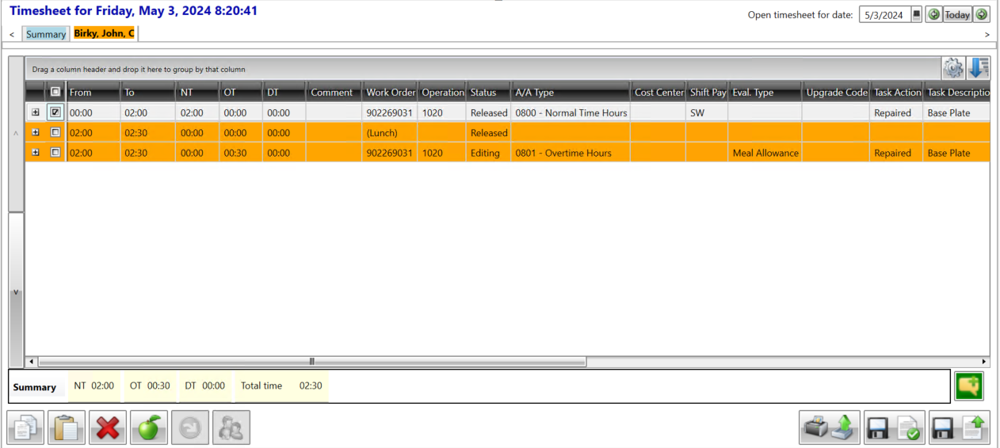
Max results
This drop-down allows the user to select the maximum number of results
they want displayed from the search. Varying from: 50%, 100%, 200%, 500%, 1000%, 2000%.
Saved searches.
The user can utilize the Saved Searches feature to establish and retain specific search parameters. This enables the user to swiftly retrieve necessary records without the need to input search criteria repeatedly when browsing timesheets.
Saving a search:
-
Navigate to the Timekeeping tab within the IWMS Client application.
-
Input data into one or more fields on the Search Timesheets page to refine the search and obtain the desired timesheets.
-
Initiate the search by clicking on the Search button.
-
Click on the adjacent Save icon next to the Saved Searches button.
-
A dialog box titled Save Search will appear. 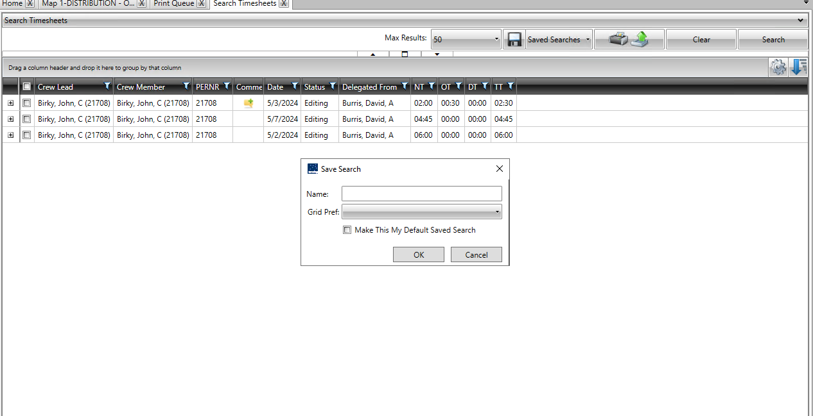
-
Enter a descriptive name for the saved search in the Name field. This name will be used when selecting a saved search.
-
From the Grid Preference list, choose a column preference. This will determine which columns are displayed based on the selected grid preference. For further details on grid preferences, refer to the Configure grid preferences section.
-
To designate this saved search as the default, tick the Make This My Default Saved Search checkbox.
-
Confirm the selections by clicking OK.
-
Access Saved Searches. The name of the newly created saved search will be visible.
Saved searches.
Allows the user to save a filter that the user has made for future use. To save a search the user must first fill in a search then click on the save button.
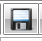
The following popup shows up to enable the user to save the search. They
can also choose to make the search default.
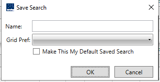
Manage crews.
The user can use the Manage Crews button to manage the crew members by adding or removing crew members.
The following page opens after the user clicks on Manage Crews:
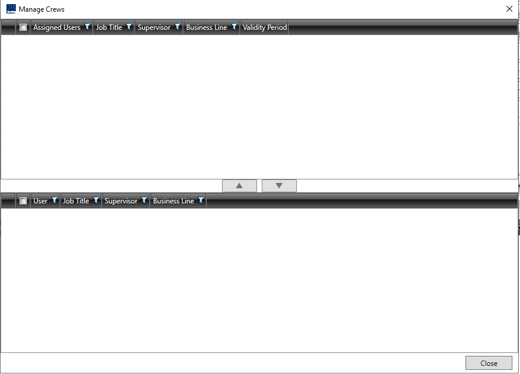
Export
The user can use the Export button to export the searched records in formatted or non-formatted options. They can choose either to export to excel or to CSV. They can select the required items from the grid or can export all the items to a Microsoft Excel file.
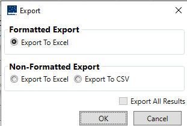
Print and Export
This button allows the user to print and export. To print, select the files or documents the user needs to print and then click on the Print and Export button.
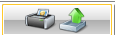
Clear
Clears the search that was previously made. All fields that were previously filled will now be empty allowing the user to start the search afresh.
Summary View
The user can use the Summary View button to view the summary of the timesheets based on the search result that is displayed. Open the Summary View dialog box by clicking the Summary View button.
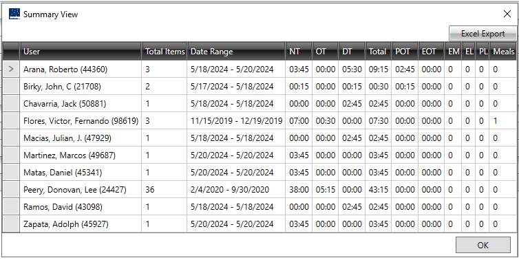
Toggle grouping.
The user can utilize the Toggle Grouping button to enable toggle grouping when the search results in the grid are grouped by selecting columns displayed in the grid. By employing toggle grouping, the user can expand or collapse the rows shown in the grid.
To toggle groups:
- In the search results grid, click on the Toggle Grouping button.
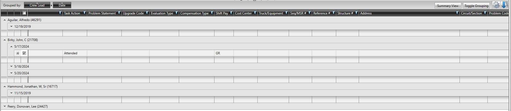
- The rows in the grid will be expanded. The user can click on
Summary View to collapse the rows.
Grid preference.
Instead of a static table, the application shows the data in a customizable grid. This grid lets the users pick which columns to display, drag them to change order, and even hide the columns that are not needed, allowing the user to save these preferences as different views. 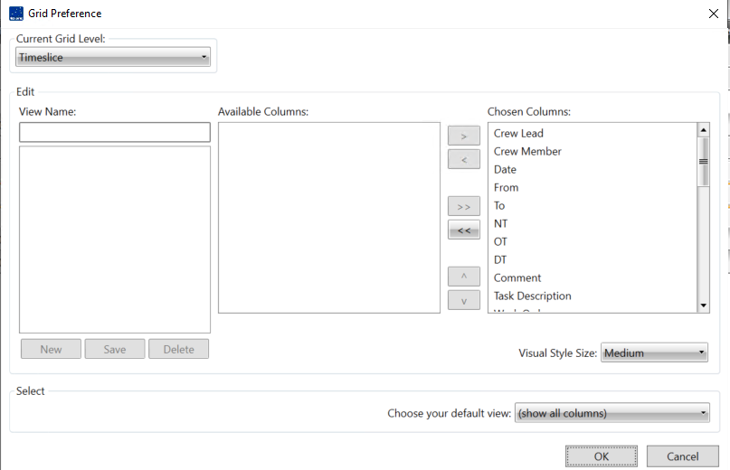
Timekeeping Approvals
The admin can approve the Timesheet using grid or Timeslice.
Supervisors can approve timesheets on the Approval page.
Pre-approvers, designated by supervisors, can pre-approve timesheets.
Users can utilize various functions on the Approval page, such as viewing all pending time slices or approving/rejecting them collectively.
Approve timesheet from the Client application.
- Navigate to IWMS application then Time Keeping tab then Approvals.
The Timekeeping Approval page is displayed.
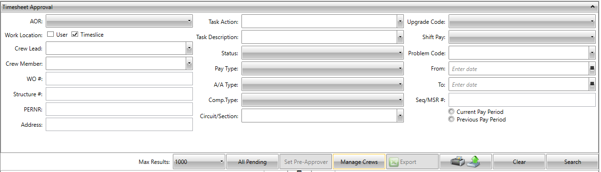
- Click Current Pay Period or Previous Pay Period.
- Enter the timekeeping approval details in the following fields.
| Field | Description |
|---|---|
| AOR Dropdown | Select an AOR. |
| Note: | Click Check all to select all the AORs check boxes. Click Uncheck all to clear all the AORs check boxes. Also, the user can select or clear one or more AOR check boxes. |
| Work Location Dropdown | Select the work location, which is one of the following: User or Timeslice. |
| Crew Lead Dropdown | Select the crew lead name. |
| Crew Member | Select the crew member name. |
| Dropdown | |
| WO # Field | Type a work order number. |
| Structure # Field | Enter a structure number. |
| PERNR Field | Enter a personal identification number. |
| Task Action | Select a task action. Based on the task action the user selects, the Task Description list is populated. |
| Dropdown | |
| Status Dropdown | Select a status. |
| A/A Type Dropdown | Select an A/A Type. Based on the pay type the user selects, the Comp. Type list is populated. The Comp Type list is populated when the options selected in the Pay Type list and the A/A Type list are related to compensation. |
| Comp. Type Dropdown | Select the compensation type. |
| Circuit/Section | To select a circuit or section, do one of the following: - In the Filter box, enter the first few characters of the circuit or section that the user wants to search. - Click Check all to select all the checkboxes. Click Uncheck all to clear all the checkboxes. Also, the user can select or clear one or more checkboxes. |
| Max Results | Select the maximum number of results to be displayed during search. |
| Upgrade Code | Select an upgraded code. |
| Shift Pay | Select a shift pay. |
| Problem Code | Select a problem code. |
| From | Select a from date. |
| To | Select a to date. |
| Seq/MSR # Field | Enter the sequence number or the Meter Service Request number. |
- Click Search
The grid containing the timesheets is displayed.
5.Click to select the timesheets to approve and then click on the Approve All button.
6.Click on the submit button to submit the approved timesheets.
Approve All
This button at the bottom left of the Timekeeping approval page allows the user to approve all timesheets that are pending or that have been selected. To select all the pending timesheets the user will have to click the All pending button.
Reject All
This button at the bottom left of the Timekeeping approval page allows the user to reject all timesheets that are pending or that have been selected. To select all the pending timesheets the user will have to click the All pending button.
All Pending
The user can use the All-Pending button to view all the time slices that are pending for approval. The user can select a time slice to approve or reject it.
Set Pre-Approver
A pre approver is a crew lead upgraded by an approver to preapprove timesheets. When a pre- approver is made active, a supervisor can approve a timesheet only if the pre approver has approved the timesheet. If the pre approver rejects a timesheet, it is sent back to the crew lead.
Saved searches.
Allows the user to save a filter that the user has made for future use. To save a search the user must first fill a search then click on the save button.
The following popup shows up to enable the user to save the search. They
can also choose to make the search default.
Manage crews.
The user can use the Manage Crews button to manage the crew members by adding or removing crew members.
The following page opens after the user clicks on manage crews:
Export
The user can use the Export button to export the searched records in formatted or non-formatted options. They can choose either to export to excel or to CSV. They can select the required items from the grid or can export all the items to a Microsoft Excel file.
Print and Export
This button allows the user to print and Export. To print, select the files or documents the user needs to print and then click on the Print and Export button.
Clear
Clears the search that was previously made. All fields that were previously filled will now be empty allowing the user to start the search afresh.
Crew Management
The user can use the Crew Management page to manage the crew members. The crew management page allows the user to:
-Add crew members
-Remove crew members.
-Add a subcrew
-Remove a subcrew
Add Crew members.
The user can add crew members to the crew. To add members to the crew, the user must search the members. After a crew member is added, the user can view or submit timesheets for the crew member.
To add a crew member:
-
In the IWMS Client application, click the Timekeeping tab. The Timekeeping group is displayed.
-
In the Timekeeping group, click Crew Management. The Crew Management page is displayed. 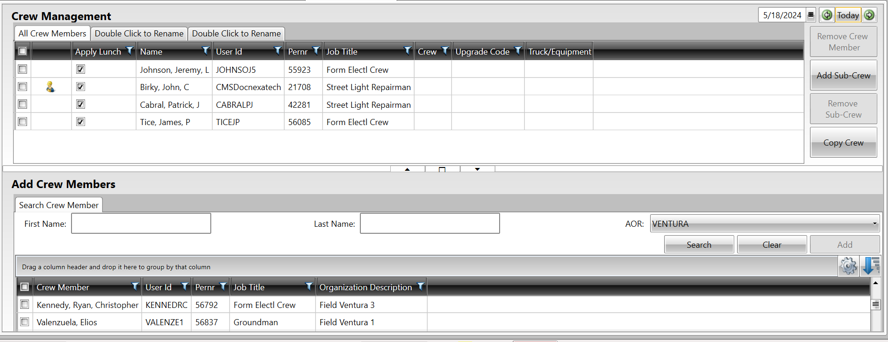
-
In the Add Crew Members section, do one or more of the following:
-
In the First Name box, type a member's first name, fully or partially.
-
In the Last Name box, type a member's last name, fully or partially.
-
In the AOR list, select an area. The user can click Select All to widen the result.
-
-
Click Search. The members that pass the earlier three filters are displayed in the grid.
-
Select the check boxes adjacent to one or more member names to add the crew members. The Add button in the Add Crew Members section is made available.
-
Click Add.
Remove Crew members.
The user can remove crew members from crew. After the user removes a crew member from the crew, the user cannot view the timesheet details of the removed member.
To remove a crew member:
- In the IWMS Client application, click the Timekeeping tab. The Timekeeping group is displayed. In the Timekeeping group,
-
Click Crew Management.
-
The Crew Management page is displayed. In the Crew Management section, select the one or more checkboxes adjacent to the members' names that the user wants to remove.
-
The Remove Crew Member button is made available. Click Remove Crew Member button. 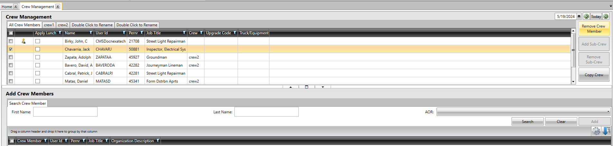
- The system displays an alert message asking the user to confirm whether to remove the selected one or more crew members. Click Yes to remove the crew member.
The crew member is removed from the grid.
Add Subcrew
The user can group the crew members by creating a subcrew and moving the members to the respective groups. The user can use the subcrew as a filter to quickly identify the crew members in that specific subcrew.
To add a sub-crew
-
In the IWMS Client application, click the Timekeeping tab.
-
The Timekeeping group is displayed. In the Timekeeping group, click Crew Management.
-
The Crew Management page is displayed. In the Crew Management section, click Add Sub-Crew.
-
A new tab with the title Double Click to Rename is added in the Crew Management section. Double-click the tab title, and then type a name for the subcrew. 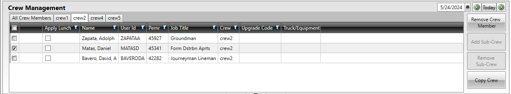
-
It is recommended to name a subcrew that helps the user identify the members in the sub crew, by reading the subcrew title. For example, if the crew members in the subcrew are from the same geographical region, The user can use the name of the area. In the Crew Management section, on the All Crew Members tab, do one of the following:
-
Right-click the member's name that the user wants to move to this subcrew.
-
Select the check boxes adjacent to the members' names to move multiple crew members to a sub crew, and then right-click the selected rows in the grid.
-
-
The Move to pop-up menu is displayed. On the Move to pop-up menu, right-click to display all sub crews, and then click a subcrew name.
The crew members are displayed in the clicked sub crew.
Remove Subcrew
The user can remove a subcrew on the Crew Management page, if the user does not require the subcrew. For example, if the user has created a subcrew by the name of an area, and most crew members in the subcrew are assigned to another work area.
To remove a sub-crew:
-
In the IWMS Client application, click the Timekeeping.
-
The Timekeeping group is displayed. In the Timekeeping group, click Crew Management.
-
The Crew Management page is displayed. In the Crew Management section, select a subcrew.
-
The members in the subcrew are displayed in a grid. The Remove Sub-Crew button is made available. Click Remove Sub-Crew.
The selected subcrew is removed from the Crew Management section.
Timekeeping Reports
Various reports can be generated by selecting the appropriate option, including CMS Reports, Contract Interpreted Reports, and SAP Reports. Time slices are required to generate these reports.
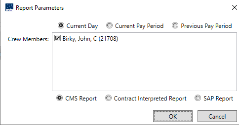
Work Management
The Work Management section can be used to search work items such as work orders, notifications, assets, Meter Service Requests (MSRs), trouble orders, and Flocs. The user can open a work item; view the work details; and perform operations around a work item such as subscribing to a work item, updating work item details, adding the work item to the timesheet, adding comments, managing attachments, linking work items, updating the work status, and printing work item details.
The Work Management tab consists of the following sub tabs:
-
Search
-
Upgrade User
-
Share Inbox
-
Manage Subscriptions
-
Status Log
-
Create MSR
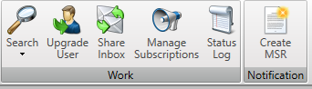
Search
The user can use the Search menu to do the following:
-
Search Work Orders
-
Search Notifications
-
Search Assets
-
Search Flocs
-
Search Trouble Orders
-
Search MSRs
Search Work Orders
Search Work Orders
- In the IWMS Client application, click the Work Management tab. The Work Management group is displayed.
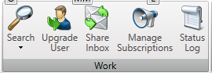 - In the Work group, click Search.
- The Search menu is displayed.
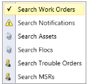 - Click Search Work Orders.
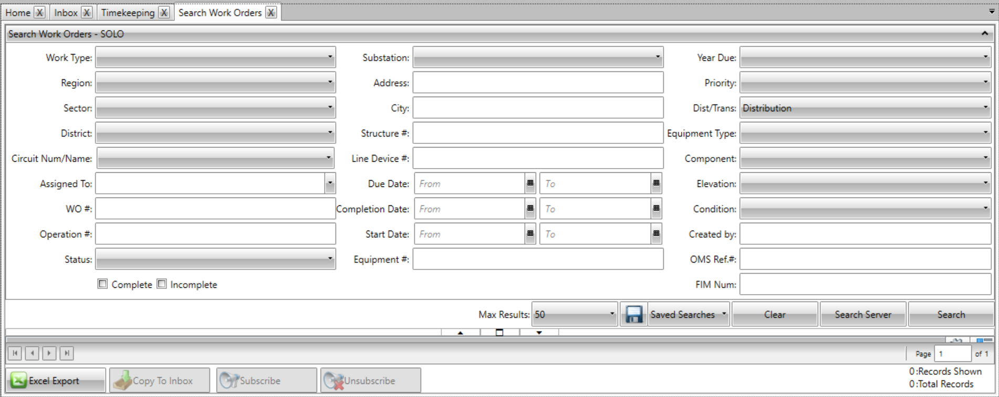
Enter the search work order details in the following fields.
| Field | Description |
|---|---|
| Work Type Dropdown | Select a work type. The user can select multiple work types. If the user wants all the work types in the list to be considered for the search, click Clear Selection. The work types are made available to the user as per the user role. |
| Region Dropdown | Select a region. Based on the region the user selects, the District and the Assigned To lists are populated. |
| Sector Dropdown | Select a sector. A sector is a type of region (AOR) that is a parent of a district. |
| District Dropdown | Select a district. The user can select multiple districts. If the user wants all the districts in the list to be considered for the search, click Clear Selection. |
| Assigned To Dropdown | Select an assignee. |
| WO # Field | Type a work order number. |
| Note: | Keep the WO # box empty if the user is not aware of the work order number. The user can locate the required work order number from the search results. |
| Operation # Field | Type an operation number. |
| Note: | Keep the Operation # box empty if the user is not aware of the operation number. The user can locate the required operation number from the search results. |
| Status Dropdown | Select a status. The user can select multiple statuses. If the user wants all the statuses in the list to be considered for the search, click Clear Selection. |
| Note: | Select the Complete check box to select those values that denote completion. Selecting the Complete checkbox selects the associated statuses in the Status list. Select the Incomplete checkbox to select those values that denote in-progress. Selecting the Incomplete checkbox selects the associated statuses in the Status list. |
| Substation Dropdown | Select a substation. |
| Address Field | Type an address. |
| City Field | Enter a city name. |
| Structure # Field | Enter a structure number. |
| Line Device # Field | Enter a line device number. |
| Due Date Field | Select the From date and the To date. |
| Completion Date Field | Select the From date and the To date. |
| Start Date Field | Select the From date and the To date. |
| Equipment # Field | Enter an equipment number. |
| Year Due Dropdown | Select a year. |
| Priority Dropdown | Select a priority. |
| Dist/Trans Dropdown | Select Distribution or Transmission. Based on the value the user selects, the Equipment Type list is populated. |
| Equipment Type Dropdown | Select an equipment type. The user can select multiple equipment types. If the user wants all the equipment types in the list to be considered for the search, click Clear Selection. |
| Component Dropdown | Select a component. The user can select multiple components. If the user wants all the components in the list to be considered for the search, click Clear Selection. |
| Elevation Dropdown | Select an elevation. The user can select multiple elevation values. If the user wants all the elevation values in the list to be considered for the search, click Clear Selection. |
| Condition Dropdown | Select a condition. The user can select multiple conditions. If the user wants all the conditions in the list to be considered for the search, click Clear Selection. |
| Created by Field | Enter the work order creator's name. |
| OMS Ref.# Field | Enter the OMS reference number. |
| FIM Num field | Enter the FIM Number. |
- Click Search.
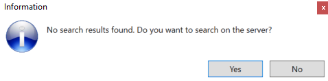
The work orders that match the search criteria entered in the earlier
steps are displayed in the grid.
Search Server
The user can use the Search Server feature to fetch records from the server database, if the search criteria that the user provides cannot fetch any records from the client database. This feature comes handy when the client data and the server data are not synchronized. It allows The user to still search the records. Before the system searches the server for records, it waits for the confirmation to search the records on the server.
Search the server.
-
In the IWMS Client application, open the Search Work Orders page.
-
On the Search Work Orders page, enter the search criteria in the fields.
-
Click Search server.
The system fetches the records that match the search criteria from the server and displays the records in the grid.
Excel Export
The user can use the Excel Export button to export the searched records to a Microsoft Excel file. The user can select the required items from the grid or can export all the items to a Microsoft Excel file.
Export the reports to Excel.
-
In the IWMS Client application, open the Search Work Orders page.
-
On the Search Work Orders page, enter the search criteria in the fields.
-
Click Search.
-
The work orders that match the search criteria are displayed in the grid.
Do one of the following:- Click Excel Export to export all the displayed records in a
-
Microsoft Excel file.
-
Select the checkboxes adjacent to the work orders The user want
- to export, and then click Excel Export to export the
- selected records in a Microsoft Excel file.
-
The Please choose an output file name dialog box is displayed. In the File Name box enter a filename.
-
Click Save.
A Microsoft Excel file is displayed with the exported records.
Copy to Inbox
The user can use the Copy to Inbox feature to pick records from the grid and assign the tasks to self. The user can view all such records in the Unassigned Work folder in the Inbox. The user may want to use this feature in the event they have finished existing work and have time to take additional work.
Copy to inbox.
-
In the IWMS Client application, open the Search Work Orders page.
-
On the Search Work Orders page, enter the search criteria in the
-
fields.
-
Click Search.
-
The work orders that match the search criteria are displayed in the
- grid. In the search grid, select the checkboxes adjacent to the
- work orders to copy to the Inbox, and then click Copy To Inbox to
-
copy the selected records to the Inbox.
-
A dialog box is displayed.
-
Click OK to copy the work orders to the Inbox.
The selected work orders can be viewed in the Unassigned Work folder in the Inbox page.
Subscribe
The user can use the Subscribe button to subscribe to selected work orders and track them. When a work order subscribed by The user is updated in the system, the user gets a message for every update in the Messages folder in the Inbox. The user can select multiple work orders while subscribing.
Subscribe ot work order.
-
In the IWMS Client application, open the Search Work Orders page.
-
On the Search Work Orders page, enter the search criteria in the fields.
-
Click Search.
-
The work orders that match the search criteria are displayed in the grid. In the search grid, select the checkboxes adjacent to the work orders to subscribe, and then click Subscribe to subscribe to the selected records.
The Confirm dialog box is displayed.
- Click OK.
Unsubscribe
The user can unsubscribe from an already subscribed work order. The user no longer receives messages after the user unsubscribes from a work order. The user can select multiple work orders while unsubscribing.
-
In the IWMS Client application, open the Search Work Orders page.
-
On the Search Work Orders page, enter the search criteria in the fields.
-
Click Search.
-
The work orders that match the search criteria are displayed in the grid. In the search grid, select the checkboxes adjacent to the work orders unsubscribe, and then click Unsubscribe to unsubscribe to the selected records.
The Confirm dialog box is displayed.
- Click OK. For more information see, Manage Subscriptions.
View Work Order Details
Work order details page: View info, perform actions based on work type. Standard actions include subscribing, adding to timesheet, validating edits, and releasing.
To view work order details
-
In the IWMS Client application, open the Search Work Orders page.
-
On the Search Work Orders page, enter the search criteria in the fields.
-
Click Search.
-
The work orders that match the search criteria are displayed in the grid. In the search grid, double-click a work order row.
The work order details page is displayed. The user can perform the required actions on this page.
Structure or Equipment
A work order is associated with flocs that link to assets. The information related to the associated flocs and the assets is displayed in this section. The user can select a floc or an asset and perform the various actions possible on that work order.
Standard Activities
The user can use the standard activities to create notifications. The standard activities are displayed as per the asset type and role.
The following are the types of standard activities:
-
Complete Standard Activity
The user can use the Complete Standard Activity section to create and complete notifications. This section contains an Add check box, which The user can use to add a time slice to the timesheet. Selecting the Add check box displays the Add to Timesheet dialog box. If the user is a crew lead, The user can select the crew member for the activity. Selecting the Add check box automatically selects the Create check box.
-
Create Standard Activity
The user can use the Create Standard Activity section to create notifications. The user can create multiple notifications by selecting the checkboxes adjacent to the activities.
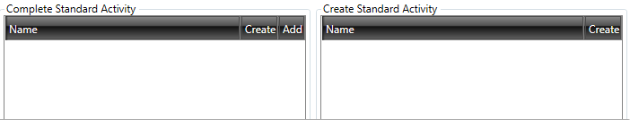
The notifications are created when the user clicks save and releases a work order.
Inspector Uninspect asset
The user can use the Inspect or Uninspect feature to mark the inspection status of an asset. The user can use the Inspect feature only with inspection work orders. If an asset is not inspected earlier, the Inspect button is enabled. When The user clicks the Inspect button, the asset is marked as inspected.
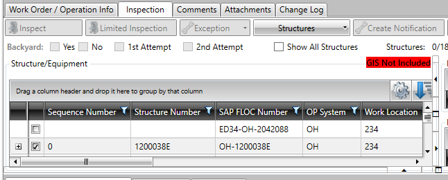
If the user wants to change the inspection status of an asset that is
already inspected, The user must click the Uninspect button.
Missing Asset
The user can use the Missing Asset button to create a missing asset notification for a selected asset. After creating a notification, the user can view the notification on the Search Notification page. For more information about searching a notification, see Search Notification.
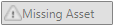
Found Asset
The user can create a found asset notification for an asset that the user has located in the field but is not available in the system. The Found Asset button is enabled only when a floc is selected in the grid, and a Missing Asset Notification is not created on the asset.
Asset Correction
The user can create an asset correction notification for an existing asset. The Asset Correction button is enabled when an existing asset is selected in the grid.
Repair Needed
The user can create a repair notification for a selected asset. There are two types of repair notifications, namely Create and Find and Fix.
-
Create - The user can create a new notification and release it.
-
Find and Fix - The user can create and complete a new notification.
Create PLC
The user can use the Create Pole Loading Calculation (PLC) tab to create a notification for a selected asset.
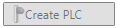
Characteristics and Measurements
The user can add information related to the characteristics and measurements of a floc or an asset the user selects. The user needs to select the floc or the asset to view the respective parameters. Depending on whether the user selects an asset or a floc, for the characteristics grid to be displayed. The user can modify the characteristics of an asset, but the characteristics of a floc can only be viewed.
Mandatory characteristics are marked with a red asterisk *. Mandatory characteristics must be filled if the user wants to perform an inspection.
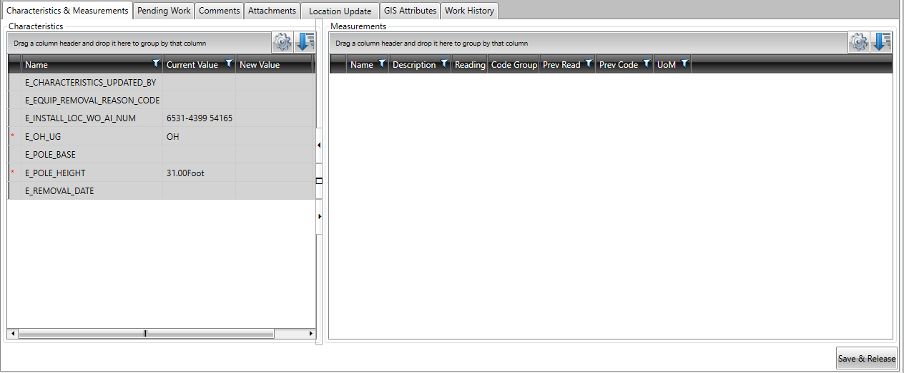
GIS Attributes
The user can view the GIS attributes of an asset or a floc. The asset or the floc must also exist in the GIS database for the data to appear on this screen.
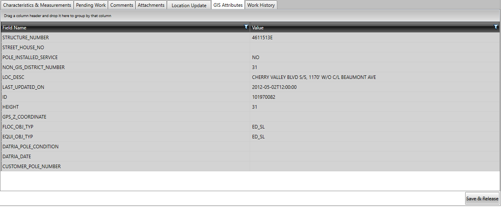
Pending Work
The user can use the Pending Work tab to view any pending work items (not completed or canceled) such as work orders, notifications, and trouble orders. The work items displayed in the pending work tab are related. They can share common information such as the structure number.
Work History
The user can use the Work History tab to view the work items history that has been completed or canceled.
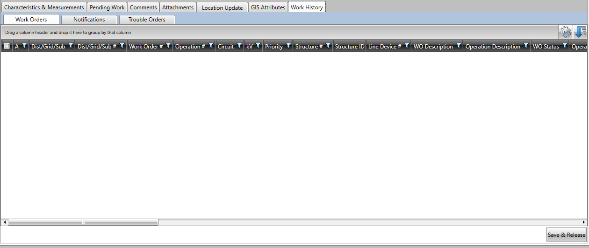
Comments
The user can use the Comments tab to enter comments for a work item. The Comments tab displays all the comments entered earlier in the Comment History section. The user can create a new comment or use the standard comment existing in the Standard Comments list. The user can save a comment using the Save & Release button. The comments can also be exported to a Microsoft Excel file.
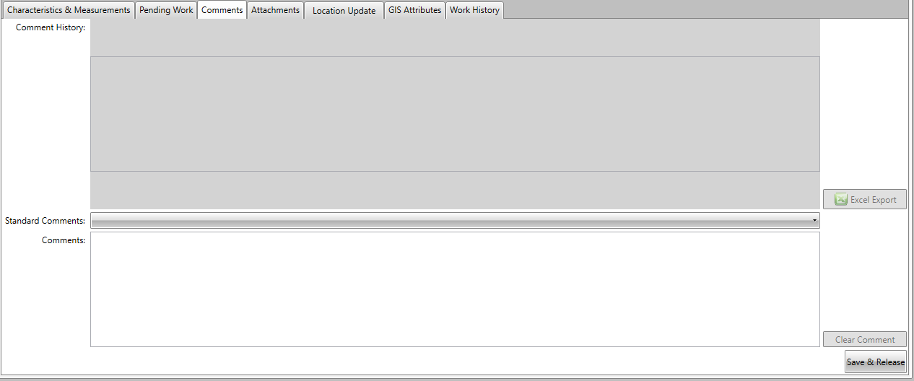
Attachments
The user can use the Attachments tab to add, view, update, and remove attachments that are associated with the work item. The user can capture or add images of equipment, repair works, and damages related to a work item in the system. All the existing attachments are displayed in the grid. The user can preview an image in the preview area by selecting it. If an attachment is added for an asset and the asset is searchable in the GIS map, a yellow flag is displayed on the GIS map.
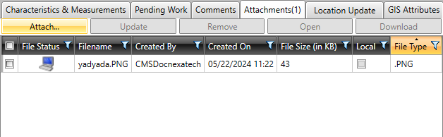
Change Log
If the user or an SAP user updates a work item, this update is recorded as a log. The log provides chronological entries of changes made to a work item. The user can only view the entries in a change log.
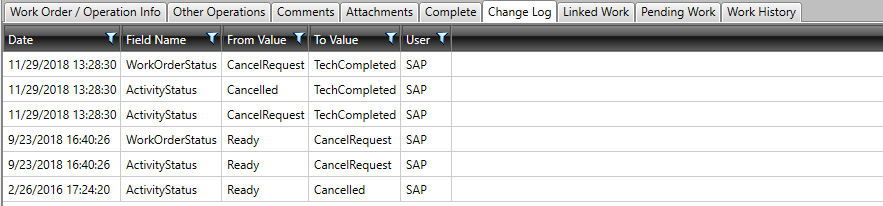
Subscribe
The user can use the Subscribe button to subscribe to selected work orders and track them. When a work order subscribed by The user is updated in the system, the user gets a message for every update in the Messages folder of the Inbox. The user can select multiple work orders while subscribing.
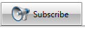
Unsubscribe
The user can unsubscribe from an already subscribed item. The user no longer receives messages after the user unsubscribes from an item. The user can select multiple work orders while unsubscribing.
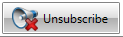
Open Tailboard form
A tailboard form is a document that identifies all known hazards, associated barriers and each worker's responsibilities.
Add to Timesheet
The user can add a work item to the timesheet. The user must open the message and click the Add to Timesheet button. When the user clicks the Add to Timesheet button, the timekeeping page is displayed with filled in information of the work order. The Add to Timesheet button is in the lower part of every work order page.
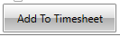
Timekeeping page displayed:
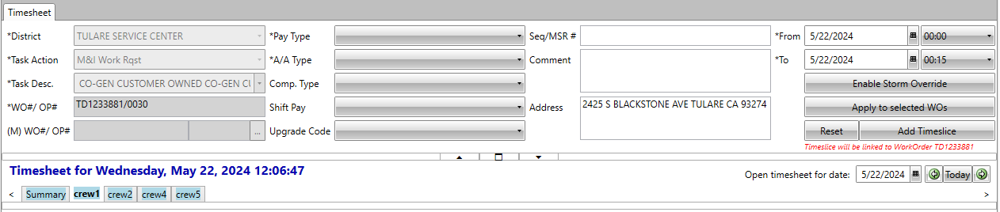
Complete
A work order can be marked as complete using the Complete button. After a work order is marked as complete, all the sections are disabled for updating. The user can add only comments to a work item that is marked as complete. The Complete button is in the lower part of every work order page.
Save and Validate
The user can use the Save & Validate button to validate the information that is entered in a section. If the information passes validation, the information is saved. The Save & Validate button is in the lower-right part of every work order page.
Save & release.
The user can use the Save & Release button to save any unsaved information on a page, and the information is sent to the server. The Save & Release button is in the lower-right part of every work order page.
Search Notifications
The user can use the Search Notifications page to search the notifications in the IWMS Client. They can use this feature to view notification details and update the required information in a notification. They can use the search fields in combination to narrow down the search and get accurate results. If they try to search notifications without providing any search criteria, the system displays all the available notifications based on assigned AORs.
To search a notification
-
In the IWMS Client application, click the Work Management tab.
-
The Work Management group is displayed. In the Work group, click Search.
-
Click Search Notifications.
-
Enter the search notification details in the following fields.
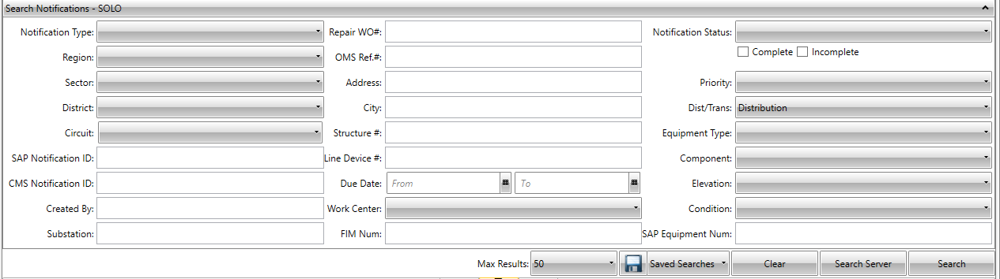
- Enter the search notification details in the following fields.
| Field | Description |
|---|---|
| Notification Type | Select a notification type. |
| The user can select multiple notification types. If the user wants all the notification types in the list to be considered for the search, click Clear Selection. The notification types are made available to the user as per the user role. | |
| Region | Select a region. |
| Based on the region the user selects, the District list is populated. | |
| Sector | Select a sector. |
| A sector is a type of region (AOR) that is a parent of a district. | |
| District | Select a district. The user can select multiple districts. If the user wants all the districts in the list to be considered for the search, click Clear Selection. |
| SAP Notification ID | Enter an SAP notification ID. |
| CMS Notification ID | Enter a CMS notification ID. |
| Created by | Enter the notification creator's name. |
| Circuit | Select a circuit. |
| The user can select multiple circuits. If the user wants all the circuits in the list to be considered for the search, click Clear Selection. | |
| Substation | Enter a substation name. |
| Repair WO# | Enter the repair work order number. |
| OMS Ref# | Enter the OMS reference number. |
| Address | Type an address. |
| City | Enter a city name. |
| Structure # | Enter a structure number. |
| Line Device # | Enter a line device number. |
| Due Date | Select the From date and the To date. |
| Work Center | Select a work center. |
| FIM Num | Type the FIM number. |
| Keep the FIM Num box empty if the user is not aware of the FIM number. | |
| Notification Status | Select a status. The user can select multiple statuses. If the user wants all the statuses in the list to be considered for the search, click Clear Selection. |
Note: Select the Complete check box to select those values that denote completion. Selecting the Complete check box selects the associated statuses in the Status list. Select the Incomplete check box to select those values that denote in-progress. Selecting the Incomplete check box selects the associated statuses in the Status list. |
|
| Priority | Select a priority. |
| Dist/Trans | Select Distribution or Transmission. Based on the value the user selects, the Equipment Type list is populated. |
| Equipment Type | Select an equipment type. The user can select multiple equipment types. If the user wants all the equipment types in the list to be considered for the search, click Clear Selection. |
| Component | Select a component. The user can select multiple components. If the user wants all the components in the list to be considered for the search, click Clear Selection. |
| Elevation | Select an elevation. The user can select multiple elevation values. If the user wants all the elevation values in the list to be considered for the search, click Clear Selection. |
| Condition | Select a condition. The user can select multiple conditions. If the user wants all the conditions in the list to be considered for the search, click Clear Selection. |
| SAP Equipment Num | Enter an SAP equipment number. |
- Click Search.
The notifications that match the search criteria entered in the earlier steps are displayed in the grid.
View Notification Details
The user can view the notification details by opening the notification details page. The notification details page allows the user to perform the permitted actions on a notification based on the notification type. The user can also perform standard actions such as subscribing or unsubscribing to a notification, adding the notification to the timesheet, validating the updates the user makes to the notification, and releasing the notification to the server.
To view notification details
-
In the IWMS Client application, open the Search Notifications page.
-
On the Search Notifications page, enter the search criteria in the fields.
-
Click Search.
The notifications that match the search criteria are displayed in the grid. In the search grid, double-click a notification row.
The notification details page is displayed. The user can perform the required actions on this page.
Problem info
The Problem Info tab displays the information of a problem reported. The tab displays the problem details such as equipment type, action required, its priority, and name of the circuit where the problem occurred.
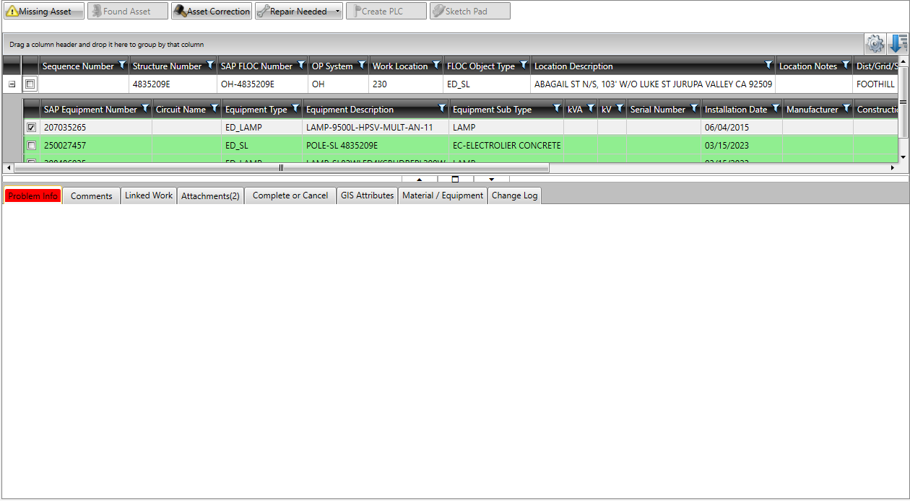
Comment
The user can use the Comments tab to enter comments for a work item. The Comments tab displays all the comments entered earlier in the Comment History section. The user can create a new comment or use the standard comment existing in the Standard Comments list. The user can save a comment using the Save & Release button. The comments can also be exported to a Microsoft Excel file.
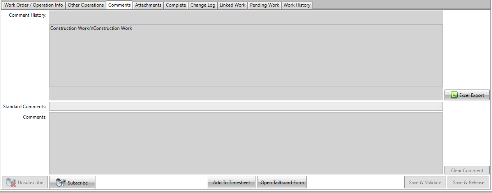
Attachments
The user can use the Attachments tab to add, view, update, and remove attachments that are associated with the work item. The user can capture or add images of equipment, repair works, and damages related to a work item in the system. All the existing attachments are displayed in the grid. The user can preview an image in the preview area by selecting it. If an attachment is added for an asset and the asset is searchable in the GIS map, a yellow flag is displayed on the GIS map.
Complete or Cancel
The user can use the Complete or Cancel tab to complete a notification using the Completion section. After a work item is marked as complete, all the sections are disabled for update. The user can add only comments to a work item that is marked as complete.
The user can use the Complete or Cancel tab to cancel a notification using the Cancellation section. A notification with status as Created can be canceled.
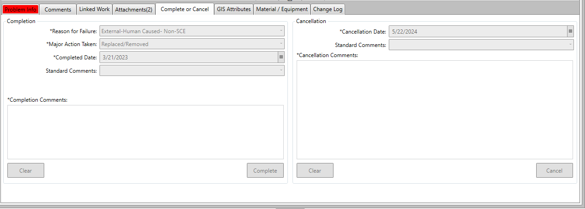
GIS Attributes
The user can use the GIS Attributes tab to view the GIS attributes of an asset or a floc. The asset or the floc must also exist in the GIS database for the data to appear on this screen.
Change log.
The user can use the Change Log tab to view any update made to a work item by The user or an SAP user, which is recorded as a log. The log provides chronological entries of changes made to a work item. The user can only view the entries in a change log.
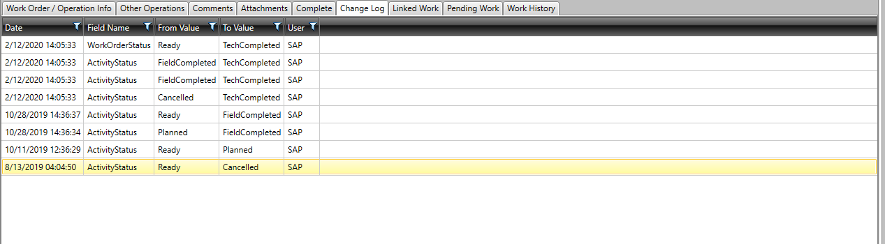
Excel Export
The user can use the Excel Export button to export the searched records to a Microsoft Excel file. The user can select the required items from the grid or can export all the items to a Microsoft Excel file.
Copy to inbox.
The user can use the Copy to Inbox feature to pick records from the grid and assign the tasks to the user. The user can view all such records in the Unassigned Work folder of the Inbox. The user may want to use this feature in the event the user has finished the existing work and has time to take additional work.
Subscribe
The user can use the Subscribe button to subscribe to selected notifications and track them. When a notification subscribed by The user is updated in the system, the user gets a message for every update in the Messages folder of the Inbox. The user can select multiple notifications while subscribing.
Unsubscribe
The user can unsubscribe from an already subscribed item. The user no longer receives messages after the user unsubscribes from an item. The user can select multiple notifications while unsubscribing.
Search Assets
Use Search for assets in IWMS Client using the Search Assets page. Narrow results with search fields or view all assets in the AORs.
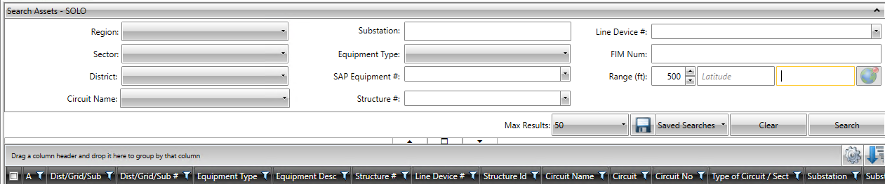
To search an asset
- In the IWMS Client application, click the Work Management tab.
The Work Management group is displayed.
-
In the Work group, click Search. The Search menu is displayed.
-
Click Search Assets.
The Search Assets page is displayed.
Enter the search assets details in the following fields.
| Field | Description |
|---|---|
| Region Dropdown | Select a region. |
| Based on the region the user selects, the District list is populated. | |
| Sector Dropdown | Select a sector. |
| A sector is a type of region (AOR) that is a parent of a district. | |
| District Dropdown | Select a district. The user can select multiple districts. If the user wants all the districts in the list to be considered for the search, click Clear Selection. |
| Circuit Name Dropdown | Select a circuit. |
| The user can select multiple circuits. If the user wants all the circuits in the list to be considered for the search, click Clear Selection. | |
| Substation Field | Enter a substation name. |
| Equipment Type Dropdown | Select an equipment type. |
| The user can select multiple equipment types. If the user wants all the equipment types in the list to be considered for the search, click Clear Selection. | |
| SAP Equipment # | Enter an SAP equipment number. |
| Structure # Field | Enter a structure number. |
| LineDevice # Field | Enter a Line Device number. |
| FIM Num Field | Enter the FIM Number. |
| Range (ft) Dropdown | Enter a range. |
| Latitude Field | Enter the latitude coordinate. |
| Longitude Field | Enter the longitude coordinate. |
- Click Search.
The assets that match the search criteria entered in the earlier steps are displayed in the grid.
Excel Export
The user can use the Excel Export button to export the searched records to a Microsoft Excel file. The user can select the required items from the grid or can export all the items to a Microsoft Excel file.
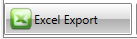
Add Comments
The user can use the Add comments button to add comments to the selected assets. The user can type the comments or use standard comments from the list. Save and release button is used to save the comment. Clear comment button is used to clear the comment field.
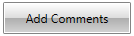
Repair Needed
The user can create a repair notification for a selected asset. There are two types of repair notifications, namely Create and Find and Fix.
-
Create - The user can create a new notification and release it.
-
Find and Fix - The user can create and complete a new notification.
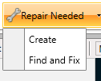
View Asset Details
The user can view the asset details by opening the asset details page. The user can use the asset details page to perform the permitted actions on an asset such as creating asset-related notifications.
To view asset details
-
In the IWMS Client application, open the Search Assets page.
-
On the Search Assets page, enter the search criteria in the fields.
-
Click Search.
The assets that match the search criteria are displayed in the grid. In the search grid, double-click an asset row.
The asset details page is displayed. The user can perform the required actions on this page. 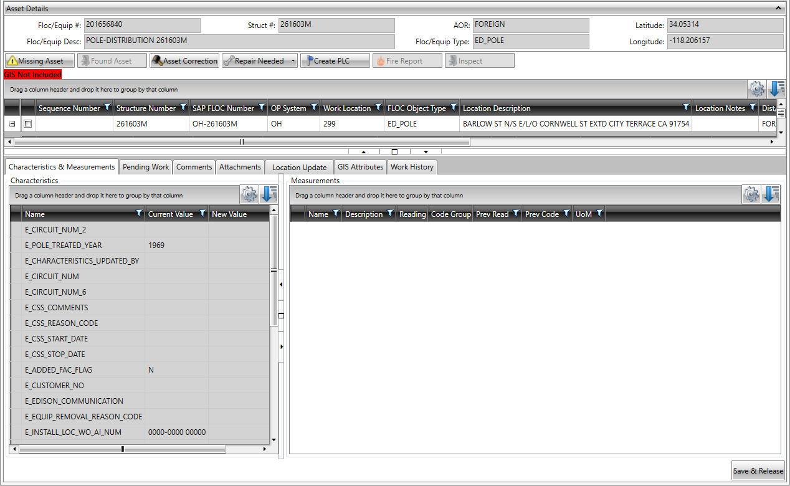 {width="6.5in" height="4.0in"}
Characteristics & Measurements
The user can use the Characteristics & Measurements tab to add information related to the characteristics and measurements of a floc or an asset the user selects. The user needs to select the floc or the asset to view the respective parameters. Depending on whether the user selects an asset or a floc, the characteristics grid is displayed. The user can modify the characteristics of an asset. Mandatory characteristics are marked with a red asterisk *. Mandatory characteristics must be filled if the user wants to perform an inspection.
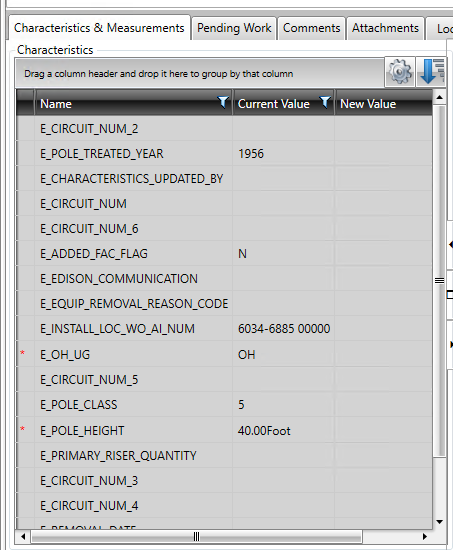
Pending Work
The user can use the Pending Work tab to view any pending work items (not completed or canceled) such as work orders, notifications, and trouble orders. The work items displayed in the pending work tab are related. They can share some common information such as the structure number.
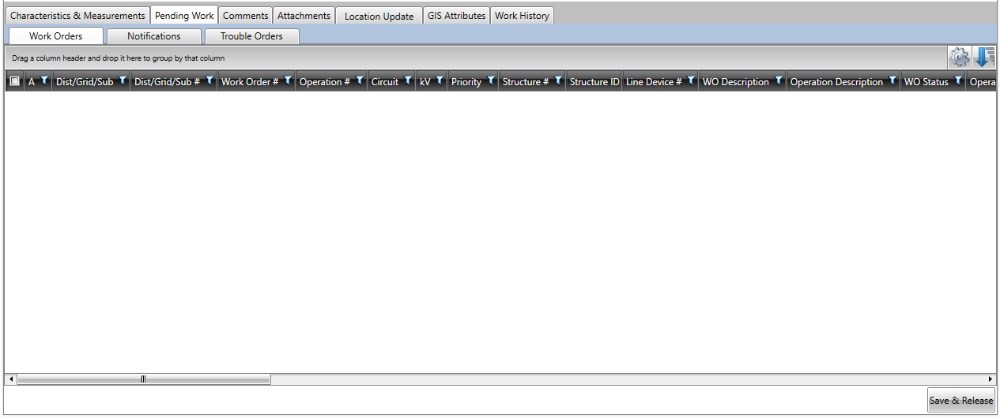
Comments
The user can use the Comments tab to enter comments for a work item. The Comments tab displays all the comments entered earlier in the Comment History section. The user can create a new comment or use the standard comment existing in the Standard Comments list. The user can save a comment using the Save & Release button. The comments can also be exported to a Microsoft Excel file.
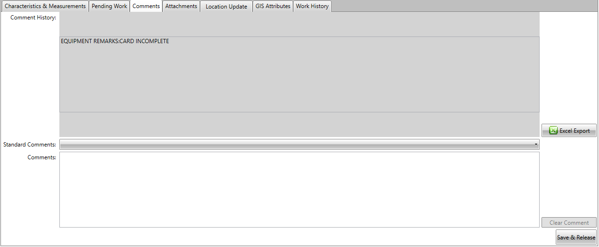
Attachments
The user can use the Attachments tab to add, view, update, and remove attachments that are associated with the work item. The user can capture or add images of equipment, repair works, and damages related to a work item in the system. 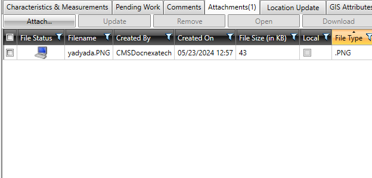
location Updates
The user can use the Location Update tab to update the location information of an asset.
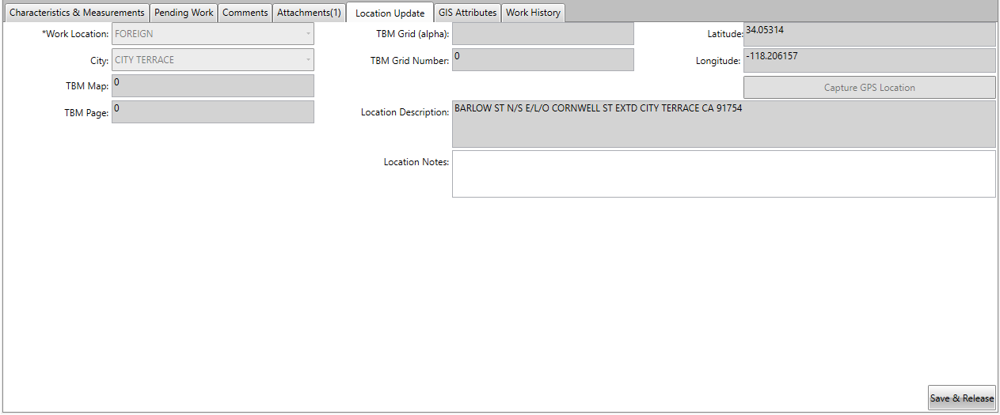
GIS Attributes
The user can use the GIS Attributes tab to view the GIS attributes of an asset or a floc. The asset or the floc must also exist in the GIS database for the data to appear on this screen.
Work History
The user can use the Work History tab to view the work items history that has been completed or canceled.
Search Flocs
Use Search flocs in IWMS Client to view associated structures and asset details. Use search fields to refine results or see all flocs in the AORs.
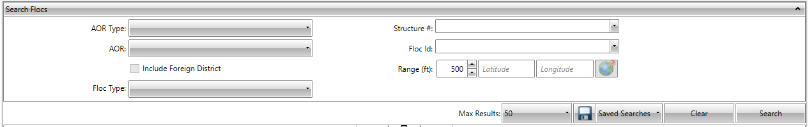
Search Flocs.
- In the IWMS Client application, click the Work Management tab.
The Work Management group is displayed.
- In the Work group, click Search.
The Search menu is displayed.
- Click Search Flocs.
The Search Flocs page is displayed. - Enter the search flocs details in the following fields.
| Field | Description |
|---|---|
| AOR Type Dropdown | Select an AOR Type. Based on the AOR Type the user selects, the AOR list is populated. |
| AOR Dropdown | Select an AOR. Based on the AOR the user selects, the Floc Type list is populated. |
| Floc Type Dropdown | Select a functional location (Floc) type. The user can select multiple floc types. If the user wants all the Floc types in the list to be considered for the search, click Clear Selection. |
| Structure# Dropdown | Select the structure number. |
| Floc Id Dropdown | Select the Floc Id. |
| Range (ft) Dropdown | Enter a range. |
| Latitude Field | Enter the latitude coordinate. |
| Longitude Field | Enter the longitude coordinate. |
- Click Search.
The flocs that match the search criteria entered in the earlier steps are displayed in the grid.
View Floc Details
The user can view the floc details by opening the floc details page. The user can use the floc details page to perform the permitted actions on a floc such as creating floc-related notifications.
To view floc details
-
In the IWMS Client application, open the Search Flocs page.
-
On the Search Flocs page, enter the search criteria in the required fields.
-
Click Search.
-
The flocs that match the search criteria are displayed in the grid. In the search grid, double-click a floc row.
The floc details page is displayed. The user can perform the required actions on this page.
Missing Asset
The user can use the Missing Asset tab to create a missing asset notification for a selected floc. After creating a notification, The user can view the notification on the Search Notification page.
Found Asset
The user can use the Found Asset button to create a found asset notification for an asset that The user has located in the field but is not available in the system. The Found Asset tab is button only when a floc is selected in the grid, and a Missing Asset Notification is not created on the asset.
Asset Correction
The user can use the Asset Correction button to create an asset correction notification for an existing asset. The Asset Correction button is enabled when an existing asset is selected in the grid.
Repair needed.
The user can create a repair notification for a selected asset. There are two types of repair notifications, namely Create and Find and Fix.
-
Create - The user can create a new notification and release it.
-
Find and Fix - The user can create and complete a new notification.
Create PLC
The user can use the Create Pole Loading Calculation (PLC) tab to create a notification for a selected asset.
Inspect
The user can use the Inspect button to mark the inspection status of an asset. The user can use the inspect feature only with inspection work orders. If an asset is not inspected earlier, the Inspect button is enabled. When the user clicks the Inspect button, the asset is marked as inspected. The user can change the inspection status of an already inspected asset by clicking the Uninspect button.
Characteristics and Measurement
The Characteristics & Measurements tab helps The user manage details about things like equipment (assets) and materials (flocs). Here's how it works:
-
Select an asset or floc The user can choose the specific item they want to view or modify.
-
View characteristics: Depending on the selection, the user will see a grid with relevant details about that asset or floc.
-
Modify characteristics (optional): The user can edit the information in the grid.
Pending Work
The user can use the Pending Work tab to view any pending work items (not completed or canceled) such as work orders, notifications, and trouble orders. The work items displayed in the pending work tab are related. They can share some common information such as the structure number.
Comments
The user can use the Comments tab to type comments for a work item. The Comments tab displays all the comments entered earlier in the Comment History box. The user can create a new comment or use the standard comment existing in the Standard Comments list. The user can save a comment by clicking the Save & Release button. The user can also clear the comments by clicking on the clear comments button. The comments can also be exported to a Microsoft Excel file.
Attachments
The user can use the Attachments tab to add, view, update, and remove attachments that are associated with the work item. The user can capture or add images of equipment, repair works, and damages related to a work item in the system.
location Updates
The user can use the Location Update tab to update the location information of an asset.
GIS Attributes
The user can use the GIS Attributes tab to view the GIS attributes of an asset or a floc. The asset or the floc must also exist in the GIS database for the data to appear on this screen.
Search Trouble Orders
The user can use the Search Trouble Orders page to search the trouble orders in the IWMS Client. The user can use this feature to view trouble order details and update the required information in a trouble order. The user can use the search fields in combination to narrow down search and get accurate results. If the user wants to search trouble orders without providing any search criteria, the system displays all the available trouble orders based on the assigned regions.
Search trouble orders.
-
In the IWMS Client application, click the Work Management tab.
-
The Work Management group is displayed.
-
In the Work group, click Search.
The Search menu is displayed.
- Click Search Trouble Orders.
The Search Trouble Orders page is displayed. \ Enter the search trouble order details in the following fields.
| Field | Description |
|---|---|
| Region Dropdown | Select a region. |
| Based on the region the user selects, the District and the Assigned To lists are populated. | |
| Sector Dropdown | Select a sector. |
| A sector is a type of region (AOR) that is a parent of a district. | |
| District Dropdown | Select a district. |
| The user can select multiple districts. If the user wants all the districts in the list to be considered for the search, click Clear Selection. | |
| Assigned To Dropdown | Select an assignee. |
| Sequence # Field | Type a sequence number. Keep the Sequence # box empty if the user is not aware of the sequence number. The user can locate the required sequence number from the search results. |
| Area Field | Type an area name. |
| Status Dropdown | Select a status. |
| The user can select multiple statuses. If the user wants all the statuses in the list to be considered for the search, they must click Clear Selection. | |
| Address Field | Enter an address. |
| City Field | Enter a city name. |
| Structure # Field | Enter a structure number. |
| Line Device # Field | Enter a line device number. |
| Location ID Field | Enter a location ID. |
| Circuit Dropdown | Select a circuit. |
| Substation Field | Select a substation. |
| Problem Code Field | Type a problem code. |
| Due Date Dropdown | Select the From date and the To date. |
| Start Date Dropdown | Select the From date and the To date. |
| Completion Date Dropdown | Select the From date and the To date. |
- Click Search.
The trouble orders that match the search criteria entered in the earlier steps are displayed in the grid.
View Trouble Order Details
View the trouble order details by opening the trouble order details page. The user can also perform standard actions such as subscribing or unsubscribing to a trouble order, adding the trouble order to the timesheet, validating the updates the user makes to the trouble order, and releasing the trouble order to the server.
View trouble order details.
-
In the IWMS Client application, open the Search Trouble Orders page.
-
On the Search Trouble Orders page, enter the search criteria in the required fields.
-
Click Search.
-
The trouble orders that match the search criteria are displayed in the grid. In the search grid, double-click the trouble order row.
The trouble order details page is displayed. The user can perform the required actions on this page.
Missing Asset
The user can use the Missing Asset button to create a missing asset notification for a selected trouble order. After creating a notification, the user can view the notification on the Search Notification page.
Found Asset
The user can use the Found Asset button to create a found asset notification for an asset that the user has located in the field but is not available in the system. The Found Asset button is enabled only when a floc is selected in the grid and a Missing Asset Notification is not created on the asset.
Asset Correction
The user can use the Asset Correction button to create an asset correction notification for an existing asset. The Asset Correction button is enabled when an existing asset is selected in the grid.
Repair Needed
The user can create a repair notification for a selected asset. There are two types of repair notifications, namely Create and Find and Fix.
-
Create - The user can create a new notification and release it.
-
Find and Fix - The user can create and complete a new notification.
Create PLC
The user can use the Create Pole Loading Calculation (PLC) tab to create a notification for a selected asset.
Update Structure
The user can use the Update Structure button to update the structure information of a trouble order. The users are required to provide a structure number to update the structure information. The Floc and Asset grid details are populated when The user updates the structure.
Customer Information
The user can use the Customer Information tab to display the details of the customer mentioned in the trouble order. The Customer Information tab displays information such as the customer's name, contact number, address, and latitude-longitude information.
Work history.
The user can use the Work History tab to view the work items history that has been completed or canceled.
Pending Work
The user can use the Pending Work tab to view any pending work (not completed or canceled) items such as work orders, notifications, and trouble orders. The work items displayed in the pending work tab are related. They can share some common information such as the structure number.
Comments
The user can use the Comments tab to enter comments for a work item. The Comments tab displays all the comments entered earlier in the Comment History section. The user can create a new comment or use the standard comment existing in the Standard Comments list. The user can save a comment using the Save & Release button. The comments can also be exported to a Microsoft Excel file.
linked work.
The user can use the Linked Work tab to link a trouble order with work orders and notifications that exist in the system. The user can link multiple work orders and notifications.
-
Unlink Selected: The user can unlink the work item that is selected in the grid. It can only unlink items that are manually linked by a user.
-
Link Entered IDs: The user can enter an ID belonging to a work item that they want to link with the existing page.
The following image displays the procedure to link work items.
Attachments
The user can use the Attachments tab to capture or add images of equipment, repair works, and damages related to a work item in the system. The user can add, view, update, and remove attachments that are associated with the work item. All the existing attachments are displayed in the grid. The user can preview an image in the preview area by selecting it. If an attachment is added for an asset and the asset is searchable in the GIS map, a yellow flag is displayed on the GIS map.
Complete
The user can use the Complete button to mark a trouble order as complete. After a trouble order is marked as complete, all the sections are disabled for updating. The user can add only comments to a work item that is marked as complete. The Complete button is in the lower part of every work order page.
Change Log
The user can use the Change Log tab to view any update made to a work item by The user or an SAP user, which is recorded as a log. The log provides chronological entries of changes made to a work item. The user can only view the entries in a change log.
Accept
The user can use the Accept button to accept an assigned trouble order. If a trouble order has already been accepted earlier or is suspended, the Accept button remains unavailable.
Reject
The user can use the Reject button to reject an assigned trouble order. If a trouble order has already been rejected earlier, the Reject button remains unavailable.
Suspend
The user can use the Suspend button to suspend a trouble order. The status of the trouble order changes to Suspended.
Add to Timesheet
The user can use the Add to Timesheet button to add a work item to the timesheet. The user has to open the message and click the Add to Timesheet button. When the user clicks the Add to Timesheet button, the Timekeeping page is displayed. The Add to Timesheet button is located in the lower part of every work order page.
Save and Validate
The user can use the Save & Validate button to validate the information that is entered in a section. If the information passes validation, the information is saved. The Save & Validate button is located in the lower-right part of every work order page.
Save and release.
The user can use the Save & Release button to save any unsaved information in a page, and the information is sent to the server. The Save & Release button is located in the lower-right part of every work order page.
Search Meter Service Requests (MSRs)
The user can use the Search MSR page to search the meter service requests (MSRs) in the IWMS Client. The user can use this feature to view the MSR details and update the required information in an MSR. The user can use the search fields in combination to narrow down search and get accurate results. If the user tries to search MSRs without providing any search criteria, the system displays all the available MSRs based on assigned AORs.
Search a Meter Service Request
- In the IWMS Client application, click the Work Management tab.
The Work Management group is displayed.
- In the Work group, click Search.
The Search menu is displayed.
- Click Search MSRs.
The Search MSR page is displayed.
- Enter the search MSR details in the following fields.
| Field | Description |
|---|---|
| MSR Type Dropdown | Select a Meter Service Request type. |
| Based on the Meter Service Request type the user selects, the MSR Sub Type list is populated. | |
| MSR Sub Type Dropdown | Select a Meter Service Request sub type. |
| Region Dropdown | Select a region. |
| Based on the region the user selects, the District and the Assigned To lists are populated. | |
| Sector Dropdown | Select a sector. |
| A sector is a type of region (AOR) that is a parent of a district. | |
| District Dropdown | Select a district. |
| Assigned To Dropdown | Select an assignee. |
| WO # Field | Type a work order number. |
| Keep the WO # box empty if the user is not aware of the work order number. The user can locate the required work order number from the search results. | |
| MSR Status Dropdown | Select a Meter Service Request status. |
| The user can select multiple statuses. If the user wants all the statuses in the list to be considered for the search, they have to click Clear Selection. | |
| Structure # Field | Enter a structure number. |
| From Due Date Dropdown | Select the from date. |
| To Due Date Dropdown | Select the to date. |
| MSR # Field | Enter a Meter Service Request number. |
| Address Field | Enter the address number for a location. |
| City Field | Enter a city name. |
| Non-Standard Field | Type additional information about the address. |
| Meter # Field | Enter a meter number. |
| Created by Field | Enter the Meter Service Request creator's name. |
- Click Search.
The MSRs that match the search criteria entered in the earlier steps are displayed in the grid.
View MSR Details
The user can view the MSR details by opening the MSR details page. The user can use the MSR details page to perform the permitted actions on an MSR. The user can also perform standard actions such as subscribing or unsubscribing to an MSR, adding the MSR to the timesheet, validating the updates the user makes to the MSR, and releasing the MSR to the server.
To view MSR details
-
In the IWMS Client application, open the Search MSR page.
-
On the Search MSR page, enter the search criteria in the required fields.
-
Click Search.
-
The MSRs that match the search criteria are displayed in the grid. In the search grid, double-click an MSR row.
The MSR details page is displayed. The user can perform the required actions on this page.
Add to Timesheet
The user can use the Add to Timesheet button to add a work item to the timesheet. The user has to open the work item and click the Add to Timesheet button. When The user clicks the Add to Timesheet button, the Timekeeping page is displayed. The Add to Timesheet button is located in the lower part of every MSR page.
Save and validate.
The user can use the Save & Validate button to validate the information that is entered in a section. If the information passes validation, the information is saved. The Save & Validate button is located in the lower-right part of every MSR page.
Save and release.
The user can use the Save & Release button to save any unsaved information in a page, and the information is sent to the server. The Save & Release button is located in the lower-right part of every MSR page.
Upgrade User
The user can use the Upgrade Users page to upgrade a user's role for a specified duration. This feature can be used when the user is planning to go on a leave, and in the absence, the user wants someone to perform certain tasks. This allows the upgraded user the privileges to perform the required actions associated with the new role.
The user can upgrade multiple users with one role. The upgraded user can view the associated screens and perform the actions within the time period (start date and expiration date) specified during upgrading the users. After the expiration date, the user roles are reset. The user can also remove an upgraded user manually.
Users I have upgraded.
The Users I Have Upgraded section displays the upgraded users along with basic details such as upgraded role, start date, and end date.
Search Users
The user can use the Search Users section to search users to upgrade user roles. The user can search users based on their First Name, Last Name, or AOR. The users that match the search criteria are displayed in the grid under Available Users. To maximize the search results, it is recommended to click Search without specifying the search criteria.
Available Users
The Available Users section displays the users whose roles can be upgraded. The users are displayed in the Available Users section as per the combination of search criteria (First Name, Last Name, and AOR).
Add Users
-
In the IWMS Client application, click the Work Management tab.
-
The Work Management controls are displayed.
-
In the Work group, click Upgrade User. The Upgrade Users page is displayed.
- Enter the search user details in the following fields.
| Field | Description |
|---|---|
| First Name field | Enter the first and/or middle name of the user to upgrade. Note: The user can also type a few characters of the first name. The names that contain the entered characters are displayed in the result. |
| Last Name field | Enter the last name of the user to upgrade. Note: The user can also type a few characters of the last name. The names that contain the entered characters are displayed in the result. |
| AOR dropdown | Select the AOR of the user. The user can select multiple AORs. If the user wants all the AORs in the list to be considered for the search, they have to click Clear Selection. Note: The user can leave the search criteria blank, if the user wants to maximize the search results. Clicking Search displays all the users that are available for upgrade. |
-
Click Search.
-
The users that match the search criteria entered in the earlier steps are displayed in the Available Users section. In the grid, select the check box corresponding to the user whom the user wants to upgrade.
-
The Add User(s) button is enabled. In the Role list, select the role to upgrade the user.
-
In the Valid fields, select the start date and the expiration date for which the user should be upgraded.
-
Click Add User(s)
-
The upgraded user is displayed in the grid in the Users I Have Upgraded section.
Remove Users
-
In the IWMS Client application, click the Work Management tab.
-
The Work Management controls are displayed. \ In the Work group, click Upgrade User.
-
The Upgrade Users page is displayed. In the Users I Have Upgraded section, select the check box corresponding to the user whom the user wants to reset in the grid.
-
The Remove User(s) button is enabled.
|> Click Remove User(s).
The user is removed from the grid in the Users I Have Upgraded section. The role of the selected user is reset to the earlier role.
Share Inbox
The user can use the Share Inbox page to share the inbox with other users. This feature can be used when The user is planning to go on a leave, and in their absence, the user wants someone to take care of the work that comes by email in the inbox. This allows the users that share the inbox to take the required action in their absence.
The user can use the search functionality to search users by first name, last name, or AOR. The user can share the inbox with multiple users. The user that the user selects can view the inbox items that the user receives. The user can stop sharing the inbox by removing the users manually.
Users Sharing My Inbox
The Users Sharing My Inbox section displays the list of users with whom the user has shared the inbox.
Search users.
The user can use the Search Users section to search users to share the Inbox. The user can search users based on their First Name, Last Name, or AOR. The users that match the search criteria are displayed in the grid in the Users Not Sharing My Inbox section. To maximize the search results, it is recommended to click Search without specifying the search criteria.
Users Not Sharing My Inbox
The Users Not Sharing My Inbox section displays the list of users from which the user can select those users with whom the user wants to share the inbox.
Add users.
-
In the IWMS Client application, click the Work Management tab.
-
The Work Management group is displayed.
-
In the Work group, click Share Inbox.
-
The Share Inbox page is displayed.
- Enter the share inbox details in the following fields.
| Field | Description |
|---|---|
| First Name field | Enter the first name of the user you want to upgrade. Note: You can also type a few characters of the first name. The names that contain the entered characters are displayed in the result. |
| Last Name field | Enter the last name of the user you want to upgrade. Note: You can also type a few characters of the last name. The names that contain the entered characters are displayed in the result. |
| AOR dropdown | Select the AOR of the user. You can select multiple AORs. If you want all the AORs in the list to be considered for the search, click Clear Selection. Clicking "Search" displays all the users that are available for upgrade. |
-
Click Search.
-
The users that match the search criteria entered in the earlier steps are displayed in the Users Not Sharing My Inbox section. In the Users Not Sharing My Inbox section, select the check box corresponding to the user with whom the user wants to share the Inbox.
-
Click the Add Selected icon.
-
The user can add all the users by clicking the Add All icon. The selected user is displayed in the grid in the User Sharing My Inbox section.
Remove Users
-
In the IWMS Client application, click the Work Management tab.
-
The Work Management group is displayed. In the Work group, click Share Inbox.
-
The Share Inbox page is displayed. In the Users Sharing My Inbox section select the check box corresponding to the user whom the user wants to remove.
-
Click the Remove Selected icon.
The user is removed from the Users Sharing My Inbox section.
Manage Subscriptions
The user can use the Manage Subscriptions section to subscribe or unsubscribe to work items of work types such as Work Orders, Notifications, Trouble Orders, and MSRs. The user can view the list of subscribed work items on the Manage Subscriptions page. This page also displays the work items subscribed from other pages within the IWMS client.
Subscribe to work items.
-
In the IWMS Client application, click the Work Management tab.
-
The Work Management group is displayed. In the Work group, click Manage Subscriptions.
-
The Add Subscriptions page is displayed. In the work type list, select a work type.
-
In the box adjacent to the work type list, enter the ID as per the work type selected.
-
Click Subscribe.
-
A Confirm box is displayed.
- Click OK.
The subscribed work item is added to the list of subscribed items.
Unsubscribe to Work Items
-
In the IWMS Client application, click the Work Management tab.
-
The Work Management controls are displayed. image In the Work group, click Manage Subscriptions.
-
The Add Subscriptions page is displayed. On the Add Subscriptions page, select a checkbox corresponding to a subscribed work item in the grid. The user can select multiple work items.
-
The Unsubscribe button is enabled.
-
Click Unsubscribe.
-
A Confirm box is displayed.
-
Click OK.
The work item is removed from the Add Subscriptions page.
Status Log
The user can use the Status Log page to view the log information related to object types such as notifications, SF6(Sulfur hexafluoride is a gas that is used in electrical power equipment as a circuit breaker.) documents, unplanned inspections, and Meter Service Requests (MSRs). The objects are displayed in respective tabs. When the user clicks a tab, the objects of the selected type are displayed in a grid.
The user can use this information to view any updates to the displayed items. The user can navigate to the respective pages by double-clicking the displayed items. In addition to this, The user can also perform standard operations such as exporting the information of the selected records to a Microsoft Excel file, copying an object to the Inbox, subscribing or unsubscribing, and deleting objects.
Creating an MSR
Meter Service Requests are initiated both on the client and from outside sources. To create an MSR, use the Create MSR button location in the Work Management > Notification section. All required fields must be filled out before the system allows the user to save and release the MSR. There is also an option to create a Duplicate MSR. This option is to help fill out most of the fields and allow the user to make minor changes to save time.
The user can create meter service requests from the IWMS Client. The Meter Service Requests (MSRs) can be created to install new meters, set meter parameters, or remove existing meters.
Create an MSR
-
In the IWMS Client application, click the Work Management tab.
-
The Work Management group is displayed.
- In the Notification group, click Create MSR.
The Create MSR page is displayed.
- In the Meter Service Request - Field Generated section, enter the information in the required fields.
+-----------------------------+----------------------------------------+ |- Field |- Description | +-----------------------------+----------------------------------------+ |- MSR# field |- The date when the Meter Service | | |- Request is created. | +-----------------------------+----------------------------------------+ |- Date Dropdown |- The date when the Meter Service | | |- Request is created. | +-----------------------------+----------------------------------------+ |- Meter # field |- Enter a meter number. | +-----------------------------+----------------------------------------+ |- MSR Type dropdown |- Enter the Meter Service Request | | |- type. | +-----------------------------+----------------------------------------+ | - MSR Sub Type dropdown | - Select the Meter Service Request | | --------------------------- | ---------------------------------- |subtype. Based on the Meter Service | |- Sequence # Field |- Request type the user selects, the | | |- MSR Sub Type list is populated. | | MSR Status |- | | |- Enter the sequence number. | | ISVC # field |- | | |- By default, the status of the Meter | | |- Service Request is displayed. | | | | | | Enter the ISVC number. | +-----------------------------+----------------------------------------+
- In the Customer information section, enter the information in the required fields.
+------------------------------+---------------------------------------+ |- Field |- Description | +------------------------------+---------------------------------------+ |- Number field |- Enter the phone number of the | | |- customer. | +------------------------------+---------------------------------------+ |- Fraction dropdown |- Select the fraction from the | | |- dropdown. | +------------------------------+---------------------------------------+ |- Prefix dropdown |- Enter the prefix of the user. A | | |- prefix is added before the name. | | |- For example, Mr. and Mrs., among | | |- others. | +------------------------------+---------------------------------------+ |- Street Name field |- Enter the name of the street. | +------------------------------+---------------------------------------+ |- Suffix dropdown |- Enter the suffix of the user. A | | |- suffix is added after the name. For | | |- example, Jr. and Sr., among others. | +------------------------------+---------------------------------------+ |- Unit field |- Enter the meter unit. | +------------------------------+---------------------------------------+ |- Mtr Identifier | Select meter identifier number. | |- Dropdown | | +------------------------------+---------------------------------------+ |- City field |- Enter the name of the city. | +------------------------------+---------------------------------------+ |- Cross Street field |- Enter the name of the cross street. | +------------------------------+---------------------------------------+ |- Non Standard Address |- Type additional information about | |- field |- the address. | +------------------------------+---------------------------------------+ |- Latitude field |- Enter the latitude coordinate. | +------------------------------+---------------------------------------+ |- Longitude field |- Enter the longitude coordinate. | +------------------------------+---------------------------------------+
- On the Set/Remove Meter Details tab, enter the information in the required fields.
+-----------------------------------+----------------------------------+ |- Control |- Description | +-----------------------------------+----------------------------------+ |- KWH Mtr No Field |- Enter the kilowatt-hour (KWH) | | |- meter number. | +-----------------------------------+----------------------------------+ |- KWH Mult Field |- Enter the KWH multiplier | | |- value. | +-----------------------------------+----------------------------------+ |- HWH Rd Field |- Enter the HWH Rd value | +-----------------------------------+----------------------------------+ |- Dem Rd Field |- Enter the HWH Rd value | +-----------------------------------+----------------------------------+ |- KVarh Mtr No Field |- Enter the Kilo Volt Amps | | |- Reactive Hours (KVarh) meter | | |- number. | +-----------------------------------+----------------------------------+ |- KVarh Mult |- Enter the KVarh multiplier | | |- value. | +-----------------------------------+----------------------------------+ |- KVarh Rd. Field |- Enter the KVarh Rd value | +-----------------------------------+----------------------------------+ |- Transformer Strct # Field |- Enter the Transformer Strct # | +-----------------------------------+----------------------------------+ |- Circuit Name / Number Field |- Select a circuit name or | | |- number. | +-----------------------------------+----------------------------------+ |- Substation Name |- Enter the name of the | | |- substation. | +-----------------------------------+----------------------------------+ |- Voltage Dropdown |- Select the voltage that is | | |- supplied to the meter. | +-----------------------------------+----------------------------------+ |- Phase Dropdown | Select the electric power phase. | +-----------------------------------+----------------------------------+ |- OH/UG Dropdown |- Select the overhead service of | | |- underground service. | +-----------------------------------+----------------------------------+ |- Wire Type Dropdown |- Select the wire type. | +-----------------------------------+----------------------------------+ |- Wire Footage |- Select the Wire Footage | +-----------------------------------+----------------------------------+ |- No. of Wire Dropdown |- Select the number of wires | | |- required. | +-----------------------------------+----------------------------------+ |- As Left Dropdown |- Select As Left from the | | |- dropdown. | +-----------------------------------+----------------------------------+ |- Missing Rd Rsn | Select the missing Rd Rsn | +-----------------------------------+----------------------------------+ |- Incmplt Rsn Cd |- Select the Incmplt Rsn Cd. | +-----------------------------------+----------------------------------+
-
On the Comments tab, type the comments in the Comments box.
-
On the Customer Details tab, enter the customer's details in the required fields.
+---------------------------------+------------------------------------+ |- Control |- Description | +---------------------------------+------------------------------------+ |- Planner | | +---------------------------------+------------------------------------+ |- Customer Name Field |- Enter the name of the customer. | +---------------------------------+------------------------------------+ |- Customer Phone # Field |- Enter the phone number of the | | |- customer. | +---------------------------------+------------------------------------+ |- Requested By Field |- Enter the name of the person who | | |- requested to install the meter, | | |- set meter parameters, or remove | | |- existing meters. | +---------------------------------+------------------------------------+ |- Requested By Phone # |- Enter the phone number of the | |- Field |- requested person. | +---------------------------------+------------------------------------+ |- Request Type Dropdown |- Enter the type of request. | +---------------------------------+------------------------------------+ |- Contact Name Field |- Enter the name of the contact. | +---------------------------------+------------------------------------+ |- Contact Phone # Field |- Enter the phone number of the | | |- contact. | +---------------------------------+------------------------------------+ |- Contact Type Dropdown |- Enter the type of contact. | +---------------------------------+------------------------------------+ |- Electrician Name Field |- Enter the name of the | | |- electrician. | +---------------------------------+------------------------------------+ |- Electrician Phone # |- Enter the phone number of the | |- Field |- electrician. | +---------------------------------+------------------------------------+ |- Installer Name Field |- Enter the name of the installer. | +---------------------------------+------------------------------------+
- On the CT/VT tab, enter the information in the required fields.
+----------------------------+-----------------------------------------+ |- Control |- Description | +----------------------------+-----------------------------------------+ |- CT Size Field |- Select the Current Transformer (CT) | | |- size. | +----------------------------+-----------------------------------------+ |- VT Size Field |- Select the Voltage Transformer (VT) | | |- size. | +----------------------------+-----------------------------------------+ |- CT Serial Field |- Enter the Current Transformer serial | | |- number. | +----------------------------+-----------------------------------------+ |- VT Serial Field |- Enter the Voltage Transformer serial | | |- number. | +----------------------------+-----------------------------------------+ |- KWH KD Field |- Enter the KWH KD | +----------------------------+-----------------------------------------+
- Click Save & Validate to validate all the data entered.
- Click Save & Release to send the MSR to SAP.
Map View
The user can use the Map View tab to view the assets related to pending work orders and navigate through the map areas among others.
Below is the MapView workgroup:
Pending Work
The user can use the Pending work group to view the work that is currently downloaded to the device. The user can use the toggle options namely, My and Other.
My icon
The user can use the My icon to view the assets related to the pending work orders that are assigned to The user in a yellow highlight.
Other icon
The user can use the Other icon to view the assets related to all work orders (available on the laptop) that fall within the geographical boundary of the currently opened map screen in a red highlight irrespective of whether they are assigned or not.
Unassigned icon
The user can use the Unassigned icon to view the assets related to all work orders (available on the laptop) that fall within the geographical boundary of the currently opened map screen in an orange highlight that is not assigned to anyone.
View
The user can use the View group to navigate through the map areas that the user has visited. The IWMS Client stores the view history. It also enables The user to create map views and add bookmarks for map locations.
View
Clicking the Views button, Edit saved View dialog box is displayed. The user can manage saved views by using this dialog box.
Bookmarks
The user can use the Bookmarks icon to create bookmarks for map locations.
When the user creates a bookmark, the application remembers the X-coordinate, Y-coordinate, the view scale, and the layer settings of the opened map.
To create a bookmark, the user must go to the location and set the layers to their liking.
Clicking the Bookmarks option displays the Edit Map Bookmarks dialog box. The user can manage saved bookmarks by using this dialog box.
In the Edit Map Bookmarks dialog box, type the bookmark name in the box, and then click Save.
To delete a saved bookmark, select the bookmark in the list, and then click Delete.
Selecting a bookmark in the bookmarks list loads the location associated with the selected bookmark.
Selection
The user can use the Multiple Info icon to view information of multiple items. The user needs to select the items that the user wants to view, and then click Open. The application displays multiple information boxes in new dialog boxes. When the Open Multiple Information Windows dialog box is closed, all open information boxes also get closed.
The user can use the Add Comment icon to add comments to an asset,
if the selected asset has an SAP linkage.
AGP FIM Grids:
This is the Accelerated Graphic port Field Inventory Map Grids
Map Tools
The Map Tools tab includes tools that enable the user to perform various searches (Predefined Search, Asset Quick Search, and Circuit Search) on the map area and also use additional tools such as Measure and Sketch pad.
Misc
Misc group can be used to search GIS-enabled data on the map. The user can also create and save predefined searches using the Search Builder.
Search builder.
Search builder icon can be used to create and save predefined searches that the user can use to search GIS-enabled data on the map. The saved searches are available on the Predefined Searches tab.
To create a predefined search:
-
In the Databases list, select the check boxes corresponding to one or more databases. Based on the databases selected, the table list is populated.
-
In the table list, select a table. The Select Items to view in the Report section displays the table attributes.
-
Under Optional Parameters, the user can add one or more optional parameters by selecting in the lists.
- Save the predefined search.
Predefined searches
The Predefined searches icon can be used to choose a predefined search to run a search. Selecting the icon displays the existing predefined searches on the Predefined Searches tab.
located in the leftmost pane of the map.

Misc group can be used to use the Sketch pad tool and the Overview
tool associated with the Map.
Sketch Pad
The user can use the Sketch pad tool to take a snapshot of the map that the user has opened recently. The Sketch pad displays the snapshot on a new page. Using the Sketch pad, the user can draw or make markings on the captured snapshot. The user can copy the modified snapshot to the clipboard or save it as an image file.
The following table explains the tools and options available with the
Sketch pad.
+-------------+----------------+--------------------------------------+
| Field | Icon | Description |
+-------------+----------------+--------------------------------------+
| | | |
+-------------+----------------+--------------------------------------+
| Freehand |  { | any devices, measurements, or |
| | width="0.39583 | geometry. |
| | 33333333333in" | |
| | he | |
| | ight="0.291666 | |
| | 6666666667in"} | |
+-------------+----------------+--------------------------------------+
| * |
{ | any devices, measurements, or |
| | width="0.39583 | geometry. |
| | 33333333333in" | |
| | he | |
| | ight="0.291666 | |
| | 6666666667in"} | |
+-------------+----------------+--------------------------------------+
| * |  {wid | |
| | th="0.40625in" | |
| | he | |
| | ight="0.260416 | |
| | 6666666667in"} | |
+-------------+----------------+--------------------------------------+
| Spline |
{wid | |
| | th="0.40625in" | |
| | he | |
| | ight="0.260416 | |
| | 6666666667in"} | |
+-------------+----------------+--------------------------------------+
| Spline |  {wi | certain number of continuous |
| | dth="0.3125in" | derivatives. |
| | hei | |
| | ght="0.1979166 | |
| | 6666666666in"} | |
+-------------+----------------+--------------------------------------+
| Arc |
{wi | certain number of continuous |
| | dth="0.3125in" | derivatives. |
| | hei | |
| | ght="0.1979166 | |
| | 6666666666in"} | |
+-------------+----------------+--------------------------------------+
| Arc |  {wi | |
| | dth="0.3125in" | |
| | heigh | |
| | t="0.21875in"} | |
+-------------+----------------+--------------------------------------+
| ** |
{wi | |
| | dth="0.3125in" | |
| | heigh | |
| | t="0.21875in"} | |
+-------------+----------------+--------------------------------------+
| ** |  { | adjacent sides, in contrast to a |
| | width="0.27083 | square. |
| | 33333333333in" | |
| | heigh | |
| | t="0.21875in"} | |
+-------------+----------------+--------------------------------------+
| Circle |
{ | adjacent sides, in contrast to a |
| | width="0.27083 | square. |
| | 33333333333in" | |
| | heigh | |
| | t="0.21875in"} | |
+-------------+----------------+--------------------------------------+
| Circle |  |
| | a95b7/media/im | consists of points equidistant from |
| | age93.png) {wid | a fixed point (the center). |
| | th="0.28125in" | |
| | heigh | |
| | t="0.21875in"} | |
+-------------+----------------+--------------------------------------+
| Polygon |
{wid | a fixed point (the center). |
| | th="0.28125in" | |
| | heigh | |
| | t="0.21875in"} | |
+-------------+----------------+--------------------------------------+
| Polygon |  {wi | |
| | dth="0.3125in" | |
| | hei | |
| | ght="0.2291666 | |
| | 6666666666in"} | |
+-------------+----------------+--------------------------------------+
| Text |
{wi | |
| | dth="0.3125in" | |
| | hei | |
| | ght="0.2291666 | |
| | 6666666666in"} | |
+-------------+----------------+--------------------------------------+
| Text |  {wi | |
| | dth="0.3125in" | |
| | he | |
| | ight="0.291666 | |
| | 6666666667in"} | |
+-------------+----------------+--------------------------------------+
| Save |
{wi | |
| | dth="0.3125in" | |
| | he | |
| | ight="0.291666 | |
| | 6666666667in"} | |
+-------------+----------------+--------------------------------------+
| Save |  { | |
| | width="0.26041 | |
| | 66666666667in" | |
| | hei | |
| | ght="0.2395833 | |
| | 3333333334in"} | |
+-------------+----------------+--------------------------------------+
| Print the |
{ | |
| | width="0.26041 | |
| | 66666666667in" | |
| | hei | |
| | ght="0.2395833 | |
| | 3333333334in"} | |
+-------------+----------------+--------------------------------------+
| Print the |  { | |
| | width="0.27083 | |
| | 33333333333in" | |
| | hei | |
| | ght="0.2291666 | |
| | 6666666666in"} | |
+-------------+----------------+--------------------------------------+
| Open an |
{ | |
| | width="0.27083 | |
| | 33333333333in" | |
| | hei | |
| | ght="0.2291666 | |
| | 6666666666in"} | |
+-------------+----------------+--------------------------------------+
| Open an |  {wid | |
| | th="0.28125in" | |
| | he | |
| | ight="0.260416 | |
| | 6666666667in"} | |
+-------------+----------------+--------------------------------------+
| Blank |
{wid | |
| | th="0.28125in" | |
| | he | |
| | ight="0.260416 | |
| | 6666666667in"} | |
+-------------+----------------+--------------------------------------+
| Blank |  { | |
| | width="0.25in" | |
| | hei | |
| | ght="0.2291666 | |
| | 6666666666in"} | |
+-------------+----------------+--------------------------------------+
| New Map |
{ | |
| | width="0.25in" | |
| | hei | |
| | ght="0.2291666 | |
| | 6666666666in"} | |
+-------------+----------------+--------------------------------------+
| New Map |  { | |
| | width="0.26041 | |
| | 66666666667in" | |
| | heigh | |
| | t="0.21875in"} | |
+-------------+----------------+--------------------------------------+
| Eraser |
{ | |
| | width="0.26041 | |
| | 66666666667in" | |
| | heigh | |
| | t="0.21875in"} | |
+-------------+----------------+--------------------------------------+
| Eraser |  {w | |
| | idth="0.239583 | |
| | 33333333334in" | |
| | hei | |
| | ght="0.1979166 | |
| | 6666666666in"} | |
+-------------+----------------+--------------------------------------+
| Change |
{w | |
| | idth="0.239583 | |
| | 33333333334in" | |
| | hei | |
| | ght="0.1979166 | |
| | 6666666666in"} | |
+-------------+----------------+--------------------------------------+
| Change |  { | |
| | width="0.26041 | |
| | 66666666667in" | |
| | he | |
| | ight="0.25in"} | |
+-------------+----------------+--------------------------------------+
| Line |
{ | |
| | width="0.26041 | |
| | 66666666667in" | |
| | he | |
| | ight="0.25in"} | |
+-------------+----------------+--------------------------------------+
| Line |  {wi | |
| | dth="0.6875in" | |
| | hei | |
| | ght="0.1770833 | |
| | 3333333334in"} | |
+-------------+----------------+--------------------------------------+
| Fill |
{wi | |
| | dth="0.6875in" | |
| | hei | |
| | ght="0.1770833 | |
| | 3333333334in"} | |
+-------------+----------------+--------------------------------------+
| Fill |  { | |
| | width="0.73958 | |
| | 33333333334in" | |
| | hei | |
| | ght="0.2083333 | |
| | 3333333334in"} | |
| | | |
| |
{ | |
| | width="0.73958 | |
| | 33333333334in" | |
| | hei | |
| | ght="0.2083333 | |
| | 3333333334in"} | |
| | | |
| |  {wi | |
| | dth="0.9375in" | |
| | heig | |
| | ht="0.1875in"} | |
+-------------+----------------+--------------------------------------+
| Line |
{wi | |
| | dth="0.9375in" | |
| | heig | |
| | ht="0.1875in"} | |
+-------------+----------------+--------------------------------------+
| Line |  {wi | |
| | dth="1.0625in" | |
| | hei | |
| | ght="0.2395833 | |
| | 3333333334in"} | |
+-------------+----------------+--------------------------------------+
| Undo |
{wi | |
| | dth="1.0625in" | |
| | hei | |
| | ght="0.2395833 | |
| | 3333333334in"} | |
+-------------+----------------+--------------------------------------+
| Undo |  { | |
| | width="0.25in" | |
| | he | |
| | ight="0.270833 | |
| | 3333333333in"} | |
+-------------+----------------+--------------------------------------+
| Redo |
{ | |
| | width="0.25in" | |
| | he | |
| | ight="0.270833 | |
| | 3333333333in"} | |
+-------------+----------------+--------------------------------------+
| Redo |  {w | |
| | idth="0.239583 | |
| | 33333333334in" | |
| | heigh | |
| | t="0.28125in"} | |
+-------------+----------------+--------------------------------------+
| Copy |
{w | |
| | idth="0.239583 | |
| | 33333333334in" | |
| | heigh | |
| | t="0.28125in"} | |
+-------------+----------------+--------------------------------------+
| Copy |  { | |
| | width="0.25in" | |
| | he | |
| | ight="0.302083 | |
| | 3333333333in"} | |
+-------------+----------------+--------------------------------------+
| **Delete |
{ | |
| | width="0.25in" | |
| | he | |
| | ight="0.302083 | |
| | 3333333333in"} | |
+-------------+----------------+--------------------------------------+
| **Delete |  {wi | |
| | dth="0.3125in" | |
| | he | |
| | ight="0.25in"} | |
+-------------+----------------+--------------------------------------+
{wi | |
| | dth="0.3125in" | |
| | he | |
| | ight="0.25in"} | |
+-------------+----------------+--------------------------------------+
Overview
Overview feature is used for a magnified view or an overview of the map. As the user pans around the map, the Overview page is refreshed simultaneously. An orange rectangle is displayed when the map is zoomed more than the Overview page.
Asset Quick Search
The Asset Quick Search group contains the Quick Search tool that enables the user to quickly search objects on the map.
Quick search
The Quick Search tool displays a list of object types. This list is displayed as per the user role. In the list, select an object. In the lower list, enter a number to search the object on the map. If the object is found on the map, the map is panned to the location of the object, and the object is displayed as selected.
Circuit Isolation
The Circuit Isolation group displays the icons that enable the user to search circuits and perform the related actions on the circuits.
Isolate Circuit
The Isolate Circuit icon displays the Isolate Circuit page. On this page user can do the following:
-
Search a circuit by entering the circuit name in the Enter Circuit Name box.
-
Open a map that displays the isolated circuits normally and the other circuits grayed out or invisible based on the settings by clicking the Isolate Circuit button.
Clear Circuit Isolation
The Clear Circuit Isolation icon is enabled when circuits on the map are isolated. Revoke the circuit isolation performed using the Isolate Circuit icon by clicking the Clear Circuit Isolation icon.
Distribution Circuit Search
The Distribution Circuit Search icon is used to open the Transmission Circuit Search page. On this page, the Region list is populated.
To enable the transmission circuit search page:
-
In the Region list, select a region. The Substation grid is populated based on the selected region.
-
In the Substation grid, select a substation. The Circuit grid is populated.
-
In the Circuit grid, select a circuit. The Isolate Circuits button and the Call Parameters button are enabled, as applicable.
Call Parameters
The user has the option of making various edits on the parameters from the Trace, the Layer Group on circuit parameters and the Trace direction, Start point and where the next direction in the circuit is. The start point is where the circuit is set to start from.
When the Call Parameters button is clicked, then, the following prompt is shown:
Work Location
These fall under the Region and are the sectional locations that contain Substations where the circuits are connected.
Sector
Similar to Work Location, Regions are also divided into Sectors which in turn contain Substations in them.
Transmission Circuit Search
The Transmission Circuit Search icon can be used to open the Transmission Circuit Search page.
The Grid or Work Group lists are set to the default grid, and
the Switching Center grid is populated with the Switching
centers associated with the selected grid or work group.
After selecting switching centers, the Voltage grid is populated
based on the voltages of the circuits associated with the selected
switching center. Each distinct voltage is displayed along with the
number of circuits of that voltage associated with the selected
switching centers.
Selecting a voltage from the Voltage grid displays the circuits associated with the selected switching center of the selected voltage in the Circuit grid.
Map Redlines
These are the distinct areas where professionals can operate in. This type of occupational segmentation refers to the division of the labor market into distinct segments, often based on skill levels, industries, or job functions.
The user can use the Map Redlines tab to:
-
Enable Redline set sharing automatically.
-
Make the Redline database visible by default.
Maps can be redlined using various tools of the CMS application. It starts with creating of certain sets as shown below:
Create Set
Once a map is selected then the user can create a set using the Create button which prompts the name of a new set to be entered.
After creating a new set then the following page should be seen after:
It provides a menu at the side that can be used to draw redlines on the
map.
Here is a list of the Menu Items as listed above:
Free Hand Redline
This is a redline that allows the user to divide the map in proportions
that don't have to be in particular symmetrical shapes.
Poly line Redline
This is a line that will allow the user to divide the map in
systematically symmetric sections.
Polygon Redline
This one on the other hand creates sections of symmetric shape of n
number of sides of the users choosing.
Arc String Redline
This creates division inside the map using a perfect arc.
Rectangle Redline
This creates a rectangular section of the map.
Circle Redline
This creates sections with circular boundaries.
Symbol Redline
It creates a section which takes the shape of a square.
Text Redline
It allows the user to add a text box inside the map.
Line Style
This determines the weight of the lines in all the redlines.
Insert Nodes
This is used after shaping the sections to determine the permanent areas
in the map to be redlined.
Move Nodes
This is used to move sections from one point of the map to another.
Reverse Node
This undoes changes done on the section of a map that has been redlined.
Delete Node
This deletes the nodes created by the Insert Node icon.
Save Node
This saves changes in a node.
Cancel Edit
This disables edits that are created by different menu items listed
above.
Sets
Once the Set button is clicked, the user can view all the sets that have been created and saved inside the application. Here, they can be managed with the ability to edit, remove and share them.
Stop Set
Here, the Sets can be deleted from the application.
Location
The user can use the Location tab to use features such as Automatic Vehicle Location (AVL), Navigation, and Address Lookup that work on the live Global Positioning System (GPS) feeds. The user can search data using these features with the map.
AVL
The AVL feature is used to keep track of vehicles at the work site and share the same information over the application with colleagues by using the My Location menu. The user can also view the vehicle locations of other users on the map by selecting the Others Location option.
My location
The My Location menu item is to view their vehicle's location on the map.
Note: No GPS locations available
Other's location
The user can use the My Location menu item to view the locations of their colleagues' vehicles on the map. It displays all the other vehicles in the location.
Note:
A user will only be able to see vehicles that have a service code related to his role. Any vehicle with a Supervisor/Manager tag set may only be displayed on users with a "view supervisor / manager vehicle" access right.
Todo: Other's locations throw an error; An error has occurred, and the application will shut down.
The following table includes the color codes used for vehicle identification on the map.
Color code Vehicle type
Brown Your vehicle
Red Stopped vehicle
Green Moving vehicle
Blue Idle vehicle
Yellow Out of coverage vehicle
Black Not in your search vehicle
AVL Refresh
The user can use the AVL Refresh icon to refresh the vehicle information on the map. This refreshes the map by displaying updated vehicle information such as updated location, new vehicles in the vicinity, and removal of vehicles from the map that are no longer in the vicinity.
Search Vehicles
The user can use the Search Vehicles page to search the vehicles in the IWMS Client. The user can use this feature to view vehicle details. The user can use the search fields in combination to narrow down your search and get accurate results. If the user tries to search vehicles without providing any search criteria, the system displays all the vehicles based on your assigned AORs.
search for a vehicle.
- In the IWMS Client application, click the Location.
The Location group is displayed.
- In the Location group, click Search.
The Search Vehicles page is displayed.
{width="6.5in" height="1.6666666666666667in"}\ - Enter the search trouble order details in the following fields.
+------------------+---------------------------------------------------+ |- Field |- Description | +------------------+---------------------------------------------------+ |- Nick Name |- Enter a nickname. | |- field | | +------------------+---------------------------------------------------+ |- First Name |- Enter a first name. | |- field | | +------------------+---------------------------------------------------+ |- Last Name |- Enter a last name. | |- field | | +------------------+---------------------------------------------------+ | | | +------------------+---------------------------------------------------+ |- Job Title |- Enter a job title. | +------------------+---------------------------------------------------+ | Driver Role | Select a driver role. | | | | | Driver | Select the driver's status. | | Status | | +------------------+---------------------------------------------------+ | Vehicle ID | Type the vehicle ID. Keep the Vehicle ID box | | | empty if you are not aware of the vehicle ID. | +------------------+---------------------------------------------------+ | Make | Enter the vehicle make. | +------------------+---------------------------------------------------+ | Model | Enter the vehicle model. | +------------------+---------------------------------------------------+ | Year | Enter the vehicle manufacturing year. | +------------------+---------------------------------------------------+ | Vehicle |- Select a status. | | Status |- | | |- The available statuses for selection are IDLE, | | |- MOVING, and STOPPED. | +------------------+---------------------------------------------------+ | License # | Enter the driver's driving license number. | +------------------+---------------------------------------------------+ | Vehicle Type | Select a vehicle type. | +------------------+---------------------------------------------------+ | Description | Type a vehicle description. | +------------------+---------------------------------------------------+ | Service Code | Select a service code type. | | | | | |- The user can select multiple service codes. If | | |- they want all the service codes in the list to | | |- be considered for the search, they should click | | |- Clear Selection. | +------------------+---------------------------------------------------+ | Base | Enter a base location of the vehicle. | | Location | | +------------------+---------------------------------------------------+ | Coverage | Select a coverage. | +------------------+---------------------------------------------------+ | Latitude | Enter the latitude coordinate. | +------------------+---------------------------------------------------+ | Longitude | Enter the longitude coordinate. | +------------------+---------------------------------------------------+ | Closest | Click to search the vehicle that is closest to | | Vehicle | the latitude and longitude coordinates. | +------------------+---------------------------------------------------+
- Click Search.
The vehicles that match the search criteria entered in the earlier steps are displayed in the grid.
Assets and Me
The user can use the Assets and me icon to view their location in relation to the highlighted assets on the map. The Assets and me icon enables the user to search the boundaries of the active selections and the location of the user, and then zooms to those boundaries. For example, if the user selects some assets but their location was off-screen, then if they click the Assets and me icon the map is zoomed so that both their location and the assets are visible.
Navigation
The user can use the Navigation icon to launch the third party software CoPilot.
Sync with Nav
The Sync with Nav icon requires a third-party GPS application (CoPilot) to be configured with the IWMS Client and CoPilot must be turned on so that the GPS signals are received. When the user clicks the Sync with Nav icon, the maps in the IWMS Client and the CoPilot are synced with each other such that the coordinates on both the maps are matched.
Address Lookup
The user can use the Address Lookup icon to find the postal address of a point on the map by entering the latitude and longitude coordinates.
Enter Address
The Enter Address group contains the Enter Address tool that enables you to enter a source or a destination address.
Enter Address
The user can use the Enter Address icon to enter a source or a destination address. To use this feature, the user must install and configure CoPilot on the same device. The IWMS Client application must be able to communicate with CoPilot. After this, the Enter Address icon is enabled in the Enter Address group. Clicking the Enter Address icon displays the Enter Address dialog box. The user can select an address as a source address or a destination address. Clicking Go after entering the address sends the location to CoPilot. If the address is verified as correct and found on the map, CoPilot turns active, and the Plan or Edit Trip page is displayed.
Circuit Conditions
Circuit Conditions tab is used to monitor conditions of circuits and trace any abnormalities using the trace parameters.
Nightly Update
The Nightly Update icon opens the latest circuit condition abnormal file that is synced to the client machine. This file can be opened using Microsoft Excel. It is used to view any updates that are done in the circuits. These updates can be viewed from files that are uploaded to the application.
Call Parameters
The user can use the Call Parameters icon to initiate an OMS call, which can be a view of the circuit or a trace of the circuit.
Call Parameter Window dialog box opens only when a map is open, and one or more circuits are selected. The user can use the call parameter dialog box to select up to five circuits.
The user can use the Call Parameters dialog box to select up to five circuits. The user can choose to view the As-Is or As-Built state of the circuits. Further, the user can filter the data by selecting a layer group and whether or not to include Tie Circuits. The user can display the results on a map by selecting the Show Map check box. The user can perform a circuit trace on the circuits by using the trace parameters. To perform tracing, a Trace Direction and a Start Point must be entered. Click Send Request to send the request to OMS and return the results in a browser.
.
Load Saved Parameters
The Load Saved Parameters icon displays the Saved Parameters Window dialog box. The user can load or delete a parameter set in the Saved Parameters Window dialog box.
After that select a parameter set, and then click Load to display
the Call Parameters dialog box with the selected parameters
information. As shown below.
Here, the user has the option of making various edits on the parameters
from the trace, the layer group on circuit parameters and the trace
direction, start point and where the next direction in the circuit is.
With this, the circuit parameters can either be saved or sent as a
request.
Open Saved Circuit Condition
The user can use the Open Saved Circuit Condition icon to locate and open the saved circuit condition information. The information is stored in an .mht file. Open this file using an internet browser.
Trace Start Point
The Trace Start Point icon displays the Call Parameters Window dialog box with the start point of the selected circuit pre-populated.
The user can use the Exit icon to close the IWMS Client application.
*************************************************************************************************************